สภาวิศวกร | Council of engineers
วิชา : Electric Power System Analysis
- Skin effect ทำให้ความต้านทานของสายส่งเพิ่มขึ้น 3.7 % ถ้าความต้านทานไฟฟ้ากระแสตรงของสายส่งมีค่า 0.0922 ohm/km จงหาความต้านทานไฟฟ้ากระแสสลับ
- 1 : 0.0956 ohm/km
- 2 : 0.0856 ohm/km
- 3 : 0.0756 ohm/km
- 4 : 0.0656 ohm/km
- คำตอบที่ถูกต้อง : 1
- สำหรับ สายส่งหนึ่งเฟสสองสาย ซึ่งมีรัศมีเท่ากัน คือ 2 cm วางอยู่ห่างกัน 0.5 m จงหาว่าค่าความจุไฟฟ้า (capacitance) ระหว่างเฟสมีค่าเท่าใด
- 1 : 14.5 nF/km
- 2 : 16.7 nF/km
- 3 : 8.6 nF/km
- 4 : 6.8 nF/km
- คำตอบที่ถูกต้อง : 3
- ใน ระบบสายส่งสามเฟส ถ้าวางสายส่งแต่ละเฟสห่างกันเป็นระยะทางเท่ากัน (สามเหลี่ยมด้านเท่า) เมื่อสายส่งมีระยะห่างระหว่างตัวนำ (เฟส) มากขึ้นจะทำให้ค่าความเหนี่ยวนำ (inductance) แต่ละเฟสเปลี่ยนแปลงไป
- 1 : สูงขึ้น
- 2 : ต่ำลง
- 3 : คงที่
- 4 : สูงขึ้นหรือต่ำลงก็ได้ขึ้นกับความถี่ของระบบไฟฟ้า
- คำตอบที่ถูกต้อง : 1
- ระบบสายส่ง 3 เฟส 50 Hz, 115 kV จ่ายภาระ 50 MW 0.95 PF lagging ถ้าระบบสายส่งยาว 150 km และมีค่า line constant ทั้งหมดเป็น Z = 95 ohm มุม 78 องศา และ Y = j0.001 S จงคำนวณหาค่า A และ D ของเมทริกซ์ ABCD เมื่อแทนสายส่งดังกล่าวด้วย two-port network ในลักษณะวงจรแบบ pi
- 1 :
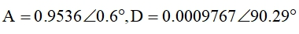
- 2 :
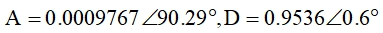
- 3 :
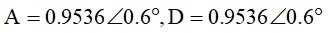
- 4 :
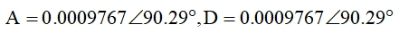
- คำตอบที่ถูกต้อง : 3
- ข้อ ใดเป็นความสัมพันธ์ของแรงดันไฟฟ้า (V) และระยะทาง (km) ของแรงดันไฟฟ้าบนสายส่งระยะยาวที่มีภระไฟฟ้า lagging power factor ต่ออยู่ที่ปลายสาย
- 1 :
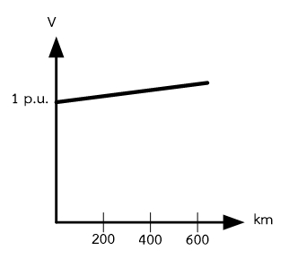
- 2 :
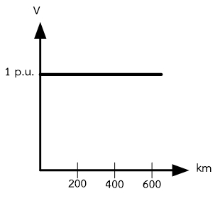
- 3 :
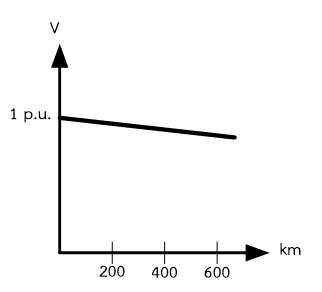
- 4 :
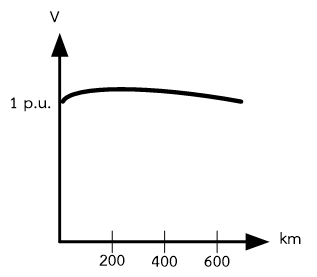
- คำตอบที่ถูกต้อง : 3
- สาย
ส่งระยะสั้นยาว 40 km จงหาแรงดันไฟฟ้าด้านส่ง (sending end voltage)
เมื่อแทนสายส่งด้วย two-port networkมีค่า A, B, C, D
และแรงดันไฟฟ้าและกระแสไฟฟ้าด้านรับ (receiving end voltage and current)
เป็นดังนี้
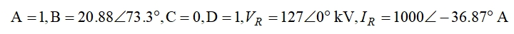
- 1 :
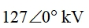
- 2 :
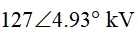
- 3 :
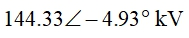
- 4 :
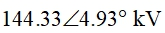
- คำตอบที่ถูกต้อง : 4
- สาย
ส่งระยะสั้นยาว 40 km จงหากระแสไฟฟ้าด้านส่ง (sending end current)
เมื่อแทนสายส่งด้วย two-port network มีค่า A, B, C, D
และแรงดันไฟฟ้าและกระแสไฟฟ้าด้านรับ (receiving end voltage and current)
เป็นดังนี้
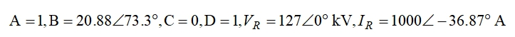
- 1 :
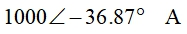
- 2 :
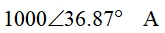
- 3 :
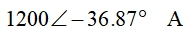
- 4 :
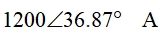
- คำตอบที่ถูกต้อง : 1
- สาย
ส่งระยะสั้นยาว 40 km จงหากำลังไฟฟ้าจริงและกำลังไฟฟ้าเสมือน (real and
reactive power) 3 เฟส เมื่อแทนสายส่งด้วย two-port network มีค่า A, B, C,
D และแรงดันไฟฟ้าและกระแสไฟฟ้าด้านรับ (receiving end voltage and
current) เป็นดังนี้
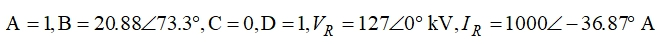
- 1 : 322.8 MW, 288.6 Mvar
- 2 : 322.8 MW, 280.4 Mvar
- 3 : 350.0 MW, 288.6 Mvar
- 4 : 350.0 MW, 280.4 Mvar
- คำตอบที่ถูกต้อง : 1
- สาย
ส่งระยะสั้นยาว 40 km จงหา voltage regulation เมื่อแทนสายส่งด้วย two-port
network มีค่า A, B, C, D และแรงดันไฟฟ้าและกระแสไฟฟ้าด้านรับ (receiving
end voltage and current) เป็นดังนี้
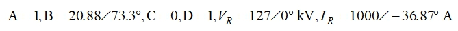
- 1 : 10.0 %
- 2 : -13.6 %
- 3 : 13.6 %
- 4 : -10.0 %
- คำตอบที่ถูกต้อง : 3
- สาย
ส่งระยะสั้นยาว 40 km จงหา voltage regulation เมื่อแทนสายส่งด้วย two-port
network มีค่า A, B, C, D และแรงดันไฟฟ้าและกระแสไฟฟ้าด้านรับ (receiving
end voltage and current) เป็นดังนี้
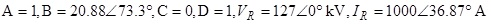
- 1 : 3.4%
- 2 : -3.4%
- 3 : 4.4%
- 4 : -4.4%
- คำตอบที่ถูกต้อง : 4
- สาย
ส่งระยะสั้นยาว 40 km มีความต้านทานของสายส่งเท่ากับ 0.15 ohm/km
และความเหนี่ยวนำของสายส่งเท่ากับ 1.3263 mH/km
สำหรับค่าตัวเก็บประจุมีค่าน้อยมากจนตัดทิ้งได้ จงคำนวณหาค่า A,B,C,D
เมื่อแทนสายส่งดังกล่าวด้วย two-port network
- 1 :
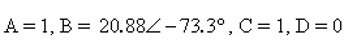
- 2 :
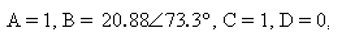
- 3 :
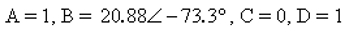
- 4 :
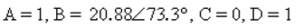
- คำตอบที่ถูกต้อง : 4
- ข้อใดเป็นคุณสมบัติค่าความต้านทานกระแสสลับ (Rac) สายส่ง
- 1 : ค่าความต้านทานลดลง เมื่ออุณหภูมิเพิ่มขึ้น
- 2 : มีค่าน้อยกว่าความต้านทานกระแสตรง (Rdc)
- 3 : มีโอกาสเกิด skin effect
- 4 : ไม่ขึ้นกับอุณหภูมิรอบข้าง
- คำตอบที่ถูกต้อง : 3
สายตัวนำอะลูมิเนียมล้วนเส้นหนึ่งมีความต้านทานกระแสตรงเท่ากับ 0.09 ohm/km ที่อุณหภูมิ 20 degree celcius จงคำนวณหาค่าความต้านทานกระแสสลับที่อุณหภูมิ 50 degree celcius โดยสมมติว่า skin effect ทำให้ความต้านทานเพิ่มขึ้นร้อยละ 3 และกำหนดให้ความสัมพันธ์ระหว่างความต้านทานและอุณหภูมิเป็นดังนี้
R2/R1 = (228+T2)/(228+T1)
- 1 : 0.096 ohm/km
- 2 : 0.100 ohm/km
- 3 : 0.104 ohm/km
- 4 : 0.109 ohm/km
- คำตอบที่ถูกต้อง : 3
- ข้อความต่อไปนี้ข้อใด ไม่ถูกต้อง
- 1 : พารามิเตอร์ของสายส่งมีลักษณะเป็นพารามิเตอร์แบบกระจาย
- 2 : ค่าความต้านทานต่อกระแสตรง (Rdc) ของสายส่ง จะมีค่าน้อยกว่าค่าความต้านทานต่อกระแสสลับ (Rac)
- 3 : โดยส่วนใหญ่แล้วตัวนำที่ใช้ทำสายส่งแบบเหนือดินคือ อลูมิเนียม
- 4 : ค่า inductive reactance ของสายส่งแบบเหนือดิน จะทำให้เกิดกระแสรั่วไหล (leakage current) ในระบบส่ง
- คำตอบที่ถูกต้อง : 4
- สาย ส่งระยะปานกลาง (medium transmission line) จะมีกระแสประจุไหลผ่าน shunt admittance เป็นจำนวนมาก ดังนั้นในการคำนวณหาค่าแรงดันและกระแสของสายส่งจะต้องนำหรือรวมเอาค่า capacitor ที่เกิดขึ้นทั้งหมดตลอดความยาวของสายส่งไว้เป็นค่า ๆ เดียว การต่อ capacitor ที่นิยมใช้กันมากที่สุดในการคำนวณเป็นการต่อแบบใด
- 1 : ต่อ capacitor ที่ต้นสายส่ง
- 2 : ต่อ capacitor ที่กลางสายส่ง
- 3 : ต่อ capacitor ที่ปลายสายส่ง
- 4 : ต่อ capacitor ที่ต้นและปลายสายส่งโดยแบ่งออกเป็นค่าเท่า ๆ กัน
- คำตอบที่ถูกต้อง : 4
- สาย ส่ง 3 เฟส แบบวงจรเดี่ยว มีความยาว 30 กิโลเมตร มีความต้านทาน 3 โอห์ม/เฟส และมีรีแอคแตนซ์ชนิดความเหนี่ยวนำ 20 โอห์ม/เฟส จ่ายกำลังไฟฟ้าให้โหลด 100 MW ที่ 230 kV เพาเวอร์แฟกเตอร์ 0.8 ล้าหลัง ค่ากระแสไฟฟ้าต้นทางสายส่งมีค่าเท่าไร
- 1 : 543 A
- 2 : 421 A
- 3 : 314 A
- 4 : 251 A
- คำตอบที่ถูกต้อง : 3
- ข้อใดไม่เป็นคุณสมบัติของสายส่งระยะปานกลาง (medium transmission line)
- 1 : มีความยาวระหว่าง 80 ถึง 240 km
- 2 : สามารถแทนด้วยวงจรแบบ pi
- 3 : สามารถตัดค่า capacitance ออกไปได้
- 4 : ไม่มีคำตอบที่ถูกต้อง
- คำตอบที่ถูกต้อง : 3
- ระบบ ไฟฟ้าสามเฟสความยาว 30 km ทำงานที่ความถี่ 50 Hz แต่ละเฟสประกอบด้วยสายตัวนำเส้นเดียว โดยมีระยะห่างระหว่างจุดศูนย์กลางของสายตัวนำแต่ละเส้นเท่ากับ 3 m เท่ากันหมด และมีค่ารีแอคแตนซ์เชิงเหนี่ยวนำ (inductive reactance) เท่ากับ 0.14 ohm/line จงคำนวณหาค่ารีแอคแตนซ์เชิงเหนี่ยวนำเมื่อกำหนดให้ระบบดังกล่าวมีความยาว 25 km และทำงานที่ความถี่ 60 Hz
- 1 : 0.10 ohm/line
- 2 : 0.14 ohm/line
- 3 : 0.20 ohm/line
- 4 : ข้อมูลไม่เพียงพอ
- คำตอบที่ถูกต้อง : 2
- ระบบ ส่งจ่ายไฟฟ้าขนาดแรงดัน 500 kV ความยาว 250 km มีค่าความเหนี่ยวนำของสาย (line inductance) เท่ากับ 1 mH/km/phase และมีค่าความจุไฟฟ้า (line capacitance) เท่ากับ 0.01x10-6 F/km/phase ถ้าสมมติว่าสายส่งไม่มีความสูญเสีย (lossless line) จงคำนวณหาค่า Surge Impedance Loading (SIL)
- 1 : 250 MW
- 2 : 500 MW
- 3 : 632 MW
- 4 : 790 MW
- คำตอบที่ถูกต้อง : 4
- สาย
ส่ง 3 เฟสวงจรหนึ่ง เส้นผ่าศูนย์กลางสายทุกเส้นมีขนาด 2 cm วางดังแสดงในรูป
จงหาค่าความเหนี่ยวนำ (inductance) ของสาย
เมื่อมีการสลับสายที่ทุกๆความยาวหนึ่งในสามของความยาวสาย
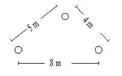
- 1 : 1.3 H/km
- 2 : 1.3 mH/km
- 3 : 2.6 H/km
- 4 : 2.6 mH/km
- คำตอบที่ถูกต้อง : 2
- สาย ส่ง 3 เฟส ระยะทาง 400 km ในสภาวะไม่มีภาระทางไฟฟ้า มีแรงดันไฟฟ้าต้นทางเท่ากับ 500 kV อยากทราบว่าแรงดันไฟฟ้าปลายทาง จะเป็นอย่างไร
- 1 : มีค่าน้อยกว่าต้นทาง
- 2 : เท่ากับต้นทาง
- 3 : มากกว่าต้นทาง
- 4 : ไม่มีข้อถูก
- คำตอบที่ถูกต้อง : 3
- สาย ส่ง 3 เฟสระยะยาว ปลายทางมีภาระไฟฟ้าเป็นค่าความต้านทาน ซึ่งมี impedance เท่ากับ characteristic impedance ของสายส่ง ตัวประกอบกำลัง (power factor) ด้านปลายทางจะเป็นอย่างไร
- 1 : มีค่าเท่ากับ 1
- 2 : มีค่ามากกว่า 1
- 3 : มีค่ามากกว่า 0 แต่น้อยกว่า 1
- 4 : มีค่าติดลบ
- คำตอบที่ถูกต้อง : 1
- การชดเชยสายส่ง (line compensation) แบบใดถูกใช้เพื่อแก้ไขปัญหา Ferranti effect
- 1 : ต่อตัวเก็บประจุอนุกรมกับสายส่ง
- 2 : ต่อตัวเก็บประจุขนานกับสายส่ง
- 3 : ต่อตัวเหนี่ยวนำอนุกรมกับสายส่ง
- 4 : ต่อตัวเหนี่ยวนำขนานกับสายส่ง
- คำตอบที่ถูกต้อง : 4
- ข้อใดต่อไปนี้ไม่เป็นพารามิเตอร์หลักในแบบจำลองของสายส่ง
- 1 : Resistance
- 2 : Attenuation constant
- 3 : Capacitance
- 4 : Conductance
- คำตอบที่ถูกต้อง : 2
- ปรากฏการณ์ที่เกี่ยวข้องกับประจุไฟฟ้า (electric charge) แสดงในแบบจำลองของสายส่งด้วยพารามิเตอร์ใด
- 1 : Conductance
- 2 : Resistance
- 3 : Capacitance
- 4 : Inductance
- คำตอบที่ถูกต้อง : 3
- ปรากฏการณ์ที่เกี่ยวข้องกับฟลักซ์แม่เหล็ก (magnetic flux) แสดงในแบบจำลองของสายส่งด้วยพารามิเตอร์ใด
- 1 : Conductance
- 2 : Resistance
- 3 : Capacitance
- 4 : Inductance
- คำตอบที่ถูกต้อง : 4
- กำลังงานสูญเสียในสายส่ง จะเกิดขึ้นเพราะพารามิเตอร์ใดในแบบจำลองของสายส่ง
- 1 : Conductance
- 2 : Resistance
- 3 : Capacitance
- 4 : Inductance
- คำตอบที่ถูกต้อง : 2
- ค่า คงตัวการแผ่คลื่น (propagation constant) ของสายส่งที่มี impedance เป็น 9 ohm/m และ admittance เป็น 16 ohm/m มีค่าเป็นเท่าใด
- 1 : 25
- 2 : 144
- 3 : 12
- 4 : 7
- คำตอบที่ถูกต้อง : 3
- ค่า characteristic impedance ของสายส่งที่มี impedance เป็น 9 ohm/m และ admittance เป็น 16 ohm/m มีค่าเป็นเท่าใด
- 1 : 25
- 2 : 1.33
- 3 : 7
- 4 : 0.75
- คำตอบที่ถูกต้อง : 2
- ข้อ ใดแสดงความเหนี่ยวนำรวม (total inductance) ในหน่วย H/m ของตัวนำตันชนิดรูปทรงกระบอก (solid cylindrical conductor) ที่มีรัศมี r เนื่องจากฟลักซ์คล้องทั้งภายในและภายนอก (internal and external flux linkages) ที่วางห่างกันที่ระยะทาง D ได้อย่างถูกต้อง
- 1 :
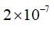
- 2 :
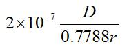
- 3 :
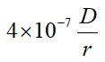
- 4 : ไม่มีข้อใดถูก
- คำตอบที่ถูกต้อง : 2
ข้อใดอธิบายปรากฎการณ์ (Ferranti) ได้อย่างถูกต้อง
a) การไหลของกระแสที่ไม่สม่ำเสมอ
b) ปรากฎการณ์นี้เกิดขึ้นเมื่อไม่มีโหลด
c) แรงดันที่ด้านรับสูงขึ้น
- 1 : ข้อ a) และข้อ b)
- 2 : ข้อ b) และข้อ c)
- 3 : ข้อ a) และข้อ c)
- 4 : ถูกทุกข้อ
- คำตอบที่ถูกต้อง : 2
- สายส่งหนึ่งเฟสสองสาย (two-line single phase) ซึ่งมีรัศมีเท่ากันคือ 1 cm และวางห่างกัน 1 m จงหาว่าความเหนี่ยวนำรวมเป็นกี่ H/m
- 1 : 11.5 x 10-7
- 2 : 14.2 x 10-7
- 3 : 17.8 x 10-7
- 4 : 18.4 x 10-7
- คำตอบที่ถูกต้อง : 4
- สาย ส่งสามเฟสมีระยะห่างระหว่างแต่ละเฟสเท่ากันเป็น 10 m เมื่อสายส่งมีเส้นผ่านศูนย์กลางเท่ากันเป็น 2 cm จงหา capacitance ระหว่างเฟสและ neutral ว่าเป็นกี่ pF/m
- 1 : 9.40
- 2 : 8.95
- 3 : 7.54
- 4 : 5.12
- คำตอบที่ถูกต้อง : 2
จงหาค่าเฉลี่ยทางเรขาคณิตของระยะทาง (Geometrical Mean Distance: GMD) ของเฟส a เพื่อหาความจุไฟฟ้า (capacitance) เมื่อรัศมีของสายส่งแต่ละเส้นเป็น 2 cm
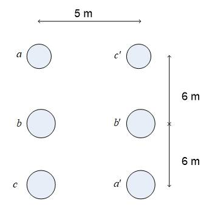
- 1 : 0.311 m
- 2 : 0.346 m
- 3 : 0.412 m
- 4 : 0.510 m
- คำตอบที่ถูกต้อง : 4
- จง
หาค่าเฉลี่ยทางเรขาคณิตของระยะทาง (Geometrical Mean Distance: GMD) ของเฟส
a เพื่อหาความเหนี่ยวนำไฟฟ้า (inductance)
เมื่อรัศมีของสายส่งแต่ละเส้นเป็น 2 cm
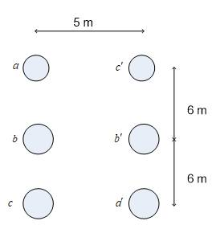
- 1 : 0.712 m
- 2 : 0.806 m
- 3 : 0.643 m
- 4 : 0.537 m
- คำตอบที่ถูกต้อง : 1
- ในความเป็นจริง ความจุไฟฟ้า (capacitance) ของสายส่งไฟฟ้ามีคุณลักษณะอย่างไร
- 1 : มีค่ามากที่ด้าน receiving end
- 2 : มีค่ามากที่ด้าน sending end
- 3 : มีการกระจายตัวอย่างสม่ำเสมอตลอดสายส่ง
- 4 : มีค่ามากที่สุดที่กึ่งกลางระหว่าง sending end และ receiving end
- คำตอบที่ถูกต้อง : 3
- ความ สามารถในการส่งกำลังไฟฟ้า (transmission capacity) ของระบบไฟฟ้าที่ใช้ความถี่ 50 Hz เมื่อเปรียบเทียบกับกับระบบไฟฟ้าที่ใช้ความถี่ 60 Hz เป็นอย่างไร
- 1 : มีค่ามากกว่า
- 2 : มีค่าน้อยกว่า
- 3 : มีค่าเท่ากัน
- 4 : ข้อมูลที่ให้ไม่เพียงพอที่จะตอบได้
- คำตอบที่ถูกต้อง : 1
- ข้อใดต่อไปนี้จะเป็นเหตุการณ์เมื่อค่า impedance ของโหลดมีค่าเท่ากับ characteristic impedance ของสายส่ง
- 1 : โหลดจะดูดซับพลังงานทั้งหมดไว้
- 2 : ระบบจะเกิดการสั่นพ้อง (resonance)
- 3 : พลังงงานทั้งหมดจะสูญหายไปในระบบส่ง
- 4 : พลังงานจากแหล่งจ่ายจะไม่สามารถส่งออกไปยังโหลดได้
- คำตอบที่ถูกต้อง : 1
- รูปคลื่นแรงดันไฟฟ้าในสายส่งระยะยาวเป็นฟังก์ชันของตัวแปรใดบ้าง
- 1 : เวลา ระยะทาง
- 2 : เวลา
- 3 : ระยะทาง
- 4 : เวลา ระยะทาง และ ค่า inductance
- คำตอบที่ถูกต้อง : 1
- สาย ส่งสามเฟสระยะปานกลาง (medium line) ในระบบ 115 kV ที่ความถี่ 50 Hz ความยาว 100 km ค่า inductance ต่อเฟสเป็น 0.1 mH/km ค่า resistance เป็น 0.05 ohm/km จงคำนวณหาค่า B ของเมทริกซ์ ABCD เมื่อแทนสายส่งดังกล่าวด้วย two-port network ในลักษณะวงจรแบบ pi
- 1 : 0.05+j0.1
- 2 : 5+j3.14
- 3 : 0.05-j0.1
- 4 : 5-j3.14
- คำตอบที่ถูกต้อง : 2
- สาย ส่งสามเฟสระยะปานกลาง (medium line) ในระบบ 115 kV ที่ความถี่ 50 Hz ความยาว 100 km ค่า inductance ต่อเฟสเป็น 0.8 mH/km ค่า resistance เป็น 0.03 ohm/km ค่า capacitance เป็น 6 pF/km จงคำนวณหาค่า D ของเมทริกซ์ ABCD เมื่อแทนสายส่งดังกล่าวด้วย two-port network ในลักษณะวงจรแบบ pi
- 1 : 0.9976+j0.0003
- 2 : 0.8824-j0.1546
- 3 : 1.0332+j0.2112
- 4 : 0.7721-j0.1223
- คำตอบที่ถูกต้อง : 1
- ค่าพารามิเตอร์ในข้อใดไม่ได้ถูกพิจารณาในการเขียนวงจรสมมูลย์ของสายส่งระยะสั้น
- 1 : inductance
- 2 : resistance
- 3 : capacitance
- 4 : มีข้อถูกมากกว่า 1 ข้อ
- คำตอบที่ถูกต้อง : 3
- ข้อใดต่อไปนี้ไม่มีผลต่อความเหนี่ยวนำ (inductance) ของระบบส่งไฟฟ้ากำลัง 1 เฟส ชนิด 2 สาย (two-wire single phase)
- 1 : ขนาดเส้นผ่านศูนย์กลางของตัวนำ
- 2 : ขนาดแรงดันไฟฟ้าที่ใช้
- 3 : ขนาดของกระแสที่ไหลผ่าน
- 4 : ระยะห่างระหว่างสายส่ง
- คำตอบที่ถูกต้อง : 2
- ข้อใดเป็นสาเหตุของปรากฏการณ์ที่กระแสไหลบนผิวมากกว่าแกนกลางของตัวนำ
- 1 : การเปลี่ยนแปลงค่า permeability
- 2 : การเกิดการลัดวงจรแบบ unsymmetrical
- 3 : การเกิด skin effect
- 4 : การเกิด corona
- คำตอบที่ถูกต้อง : 3
- ข้อ ใดแสดง electric stress ที่ตำแหน่ง x ห่างจากตัวนำที่มีรัศมีภายนอก R และรัศมีภายใน r เมื่อตัวนำมีแรงดันตกคร่อม V ได้ถูกต้อง
- 1 :
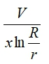
- 2 :
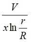
- 3 :
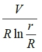
- 4 :
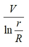
- คำตอบที่ถูกต้อง : 1
- ค่า dielectric stress ของ cable เกิดขึ้นที่ตำแหน่งใด
- 1 : ที่จุดกึ่งกลางระหว่างศูนย์กลางของตัวนำและจุดที่พิจารณา
- 2 : ที่จุดที่พิจารณา
- 3 : ที่รัศมีภายใน (แกน) ของสาย
- 4 : ที่รัศมีภายนอกของสาย
- คำตอบที่ถูกต้อง : 3
- ประสิทธิภาพการส่งกำลังไฟฟ้า (transmission efficiency) จะเพิ่มขึ้นเมื่อใด
- 1 : เพิ่มแรงดันไฟฟ้าและเพิ่มตัวประกอบกำลัง (power factor)
- 2 : ลดแรงดันไฟฟ้าและลดตัวประกอบกำลัง (power factor)
- 3 : เพิ่มแรงดันไฟฟ้าแต่ลดตัวประกอบกำลัง (power factor)
- 4 : ลดแรงดันไฟฟ้าแต่เพิ่มตัวประกอบกำลัง (power factor)
- คำตอบที่ถูกต้อง : 1
- การตีเกลียว (bundling) ของตัวนำมีวัตถุประสงค์เพื่อ
- 1 : ลดค่า reactance
- 2 : เพิ่มค่า reactance
- 3 : เพิ่มความแข็งแรงของสายส่ง
- 4 : เพื่อลดการรบกวนของสนามแม่เหล็ก
- คำตอบที่ถูกต้อง : 1
- ข้อใดเป็นช่วงของระดับแรงดันที่เหมาะสมสำหรับการส่งกำลังไฟฟ้าเป็นระยะทาง 500 km
- 1 : 33 kV-66 kV
- 2 : 66 kV-100 kV
- 3 : 110 kV- 150 kV
- 4 : 150 kV-220 kV
- คำตอบที่ถูกต้อง : 4
- กำลัง ไฟฟ้าของโหลด 3 เฟส ของระบบส่งเป็น 10 MW, 0.8 PF lagging หากกำลังสูญเสียในระบบส่งเป็น 900 kW จงหาประสิทธิภาพของระบบส่งนี้
- 1 : 60%
- 2 : 90%
- 3 : 95%
- 4 : 99%
- คำตอบที่ถูกต้อง : 2
- กำลังไฟฟ้าที่ส่งผ่านระบบส่งจะมีค่าสูงสุดเมื่อใด
- 1 : เมื่อแรงดันไฟฟ้าที่ด้านส่ง (sending end voltage) มีค่ามาก
- 2 : เมื่อแรงดันไฟฟ้าที่ด้านรับ (receiving end voltage) มีค่ามาก
- 3 : เมื่อค่า reactance มีค่ามาก
- 4 : เมื่อ corona loss มีค่าน้อย
- คำตอบที่ถูกต้อง : 1
- ระดับแรงดันไฟฟ้าในระบบส่งและระบบจำหน่ายควรถูกจำกัดอยู่ในช่วงเท่าใด
- 1 : + 0.1%
- 2 : + 1%
- 3 : + 10%
- 4 : + 25%
- คำตอบที่ถูกต้อง : 3
- การเชื่อมต่อแบบใดในระบบจำหน่าย (distribution) จะมีความน่าเชื่อถือได้ (reliability) สูงที่สุด
- 1 : ระบบแบบ main ring
- 2 : ระบบแบบ tree
- 3 : ระบบแบบ radial
- 4 : แบบใดก็มีความน่าเชื่อถือใกล้เคียงกัน
- คำตอบที่ถูกต้อง : 1
- ตัวนำ 70/6 ACSR (aluminum conductor steel reinforced) หมายถึง
- 1 : พื้นที่หน้าตัดของ aluminum เป็น 77 sq.mm และพื้นที่หน้าตัดของ steel เป็น 6 sq.mm
- 2 : พื้นที่หน้าตัดของ steel เป็น 77 sq.mm และพื้นที่หน้าตัดของ aluminum เป็น 6 sq.mm
- 3 : มีตัวนำ aluminum จำนวน 70 ตัวนำ และมีตัวนำ steel จำนวน 6 ตัวนำ
- 4 : มีตัวนำ steel จำนวน 70 ตัวนำ และมีตัวนำ aluminum จำนวน 6 ตัวนำ
- คำตอบที่ถูกต้อง : 3
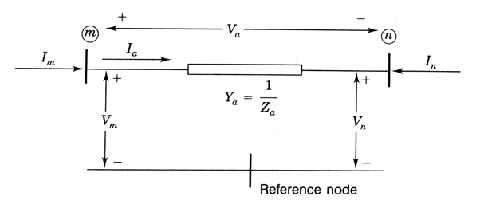
จากรูปที่กำหนด ข้อใดคือ admittance equation
- 1 :
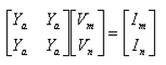
- 2 :
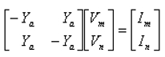
- 3 :
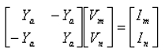
- 4 :
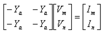
- คำตอบที่ถูกต้อง : 3
- ข้อใดกล่าวไม่ถูกต้องเกี่ยวกับปรากฎการณ์ skin effect ในสายส่ง
- 1 : เกิดได้ทั้งในระบบไฟฟ้ากระแสตรงและกระแสสลับ
- 2 : ความถี่ระบบไฟฟ้ายิ่งสูง ผลของ skin effect จะยิ่งสูงขึ้น
- 3 : ทำให้ความต้านทานมีค่าสูงขึ้น
- 4 : สำหรับระบบไฟฟ้า 50 Hz skin effect มีผลทำให้ความต้านเพิ่มขึ้นน้อยประมาณ 1-2 %
- คำตอบที่ถูกต้อง : 1
- สาย
ส่งวงจรร่วม (bundled conductors) 3 เฟสดังรูป
จงหาค่าเฉลี่ยเรขาคณิตทางระยะทาง (Geometric Mean Distance: GMD)
ของระหว่างสายส่งในแต่ละเฟส
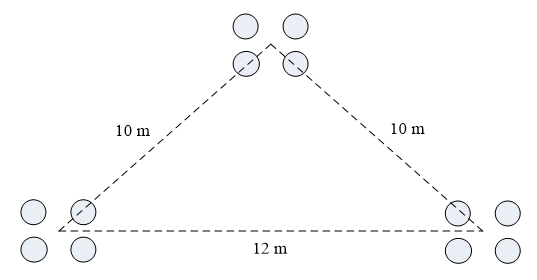
- 1 : 8.63 m
- 2 : 9.63 m
- 3 : 10.63 m
- 4 : 11.63 m
- คำตอบที่ถูกต้อง : 3
- สาย
ส่งวงจรร่วม (bundled conductors) ดังรูป หากค่าเฉลี่ยเรขาคณิตทางระยะทาง
(Geometric Mean Distance: GMD) ของสายส่งในแต่ละเฟสเท่ากับ 3 m
จงหาความเหนี่ยวนำของสายส่งแต่ละเฟส
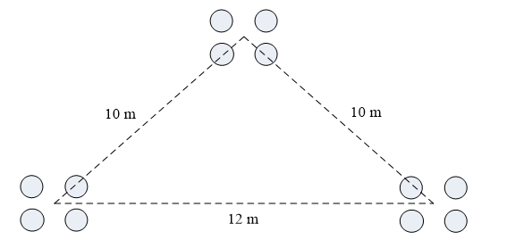
- 1 : 2.53 x 10-7 H/m
- 2 : 1.48 x 10-7 H/m
- 3 : 0.87 x 10-7 H/m
- 4 : 0.45 x 10-7 H/m
- คำตอบที่ถูกต้อง : 1
- สาย
ส่งวงจรร่วม (bundled conductors) เดินอยู่บนอากาศดังรูป
หากค่าเฉลี่ยเรขาคณิตทางระยะทาง (Geometric Mean Distance: GMD)
ของสายส่งในแต่ละเฟสเท่ากับ 3 m ค่า permittivity ของอากาศเท่ากับ 8.85 x
10-12 F/m จงหาความจุไฟฟ้าระหว่างเฟสและนิวทรอล
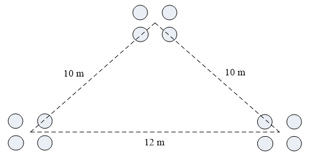
- 1 : 55.65 x 10-12 F/m
- 2 : 43.95 x 10-12 F/m
- 3 : 35.65 x 10-12 F/m
- 4 : 23.85 x 10-12 F/m
- คำตอบที่ถูกต้อง : 2
- อะลูมิเนียมซึ่งมีความต้านทานจำเพาะ 2.83 x 10-8 ohm.m นำมาใช้เป็นสายส่งในระบบ 3 เฟส ยาว 100 km พื้นที่หน้าตัดสาย 10 cm2 กำลังสูญเสียของสายส่งสามเฟสสำหรับความต้านทานกระแสตรงมีค่าเท่าใด เมื่อมีกระแสไหลในสายส่งแต่ละเฟสเท่ากับ 20 A
- 1 : 1.13 kW
- 2 : 1.96 kW
- 3 : 3.4 kW
- 4 : 4.5 kW
- คำตอบที่ถูกต้อง : 2
- ระบบไฟฟ้ากำลังระบบหนึ่งมีทั้งหมด 2 bus ระบบนี้มี admittance matrix ขนาดเท่าใด
- 1 : 1 x 1
- 2 : 2 x 2
- 3 : 3 x 3
- 4 : 4 x 4
- คำตอบที่ถูกต้อง : 2
- ระบบไฟฟ้ากำลังหนึ่งมีค่า admittance ของอุปกรณ์ไฟฟ้าดังรูป ให้คำนวณค่า Y22 ของ admittance matrix ของระบบไฟฟ้านี้
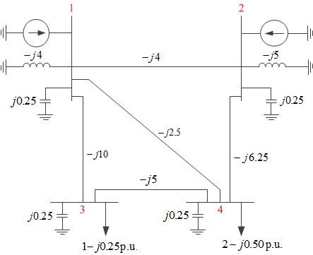
- 1 : j15
- 2 : -j4
- 3 : j4
- 4 : -j15
- คำตอบที่ถูกต้อง : 4
- ระบบไฟฟ้ากำลังหนึ่งมีค่า admittance ของอุปกรณ์ไฟฟ้าดังรูป ให้คำนวณค่า Y43 ของ admittance matrix ของระบบไฟฟ้านี้

- 1 : j15
- 2 : -j5
- 3 : j5
- 4 : -j15
- คำตอบที่ถูกต้อง : 3
- ระบบไฟฟ้ากำลังหนึ่งมีค่า impedance ของอุปกรณ์ไฟฟ้าดังรูป ให้คำนวณค่า Y13 ของ admittance matrix ของระบบไฟฟ้านี้
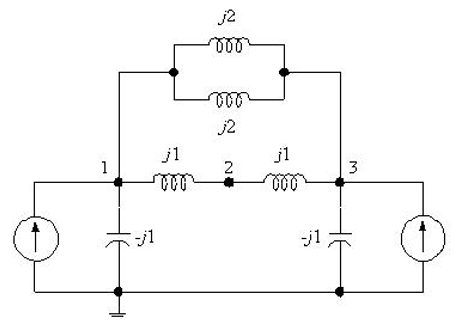
- 1 : j2
- 2 : j2
- 3 : j1
- 4 : j1
- คำตอบที่ถูกต้อง : 4
- การศึกษา load flow มีวัตถุประสงค์ข้อใดที่ถูกต้องมากที่สุด
- 1 : เพื่อศึกษาการไหลของโหลดสำหรับการวางแผนสำหรับระบบไฟฟ้าในอนาคต
- 2 : เพื่อศึกษาการไหลของโหลดสำหรับการวางแผนสำหรับระบบไฟฟ้าในปัจจุบัน
- 3 : เพื่อศึกษาการไหลของโหลดสำหรับการวางแผนสำหรับระบบไฟฟ้าในปัจจุบันและอนาคต
- 4 : เพื่อศึกษาการพยากรณ์การไหลของโหลดสำหรับระบบไฟฟ้าในอนาคต
- คำตอบที่ถูกต้อง : 3
- การศึกษา load flow ที่มีประสิทธิภาพที่สุดควรให้ระบบไฟฟ้าแทนด้วย matrix ใด
- 1 : Ybus
- 2 : Zbus
- 3 : Ybranch
- 4 : Ylink
- คำตอบที่ถูกต้อง : 1
- การคำนวณ load flow ของระบบไฟฟ้าที่ประกอบด้วย 3 bus ดังนี้
bus ที่ 1 เป็น bus ที่มีเครื่องกำเนิดไฟฟ้าซึ่งมีค่าแรงดันไฟฟ้าคงที่
bus ที่ 2 เป็น bus ที่มีโหลดซึ่งมี PL2 และ QL2 คงที่
bus ที่ 3 เป็น bus ที่มีทั้งเครื่องกำเนิดไฟฟ้าและโหลด ซึ่งมี Pg3 ของเครื่องกำเนิดไฟฟ้าคงที่ และมี PL3, QL3 ของโหลดคงที่
กำลังไฟฟ้าจริงของ bus ที่ 2 (P2) และ bus ที่ 3 (P3) มีค่าเท่าใด
- 1 : P2=PL2, P3=PL3
- 2 : P2=PL2, P3=Pg3
- 3 : P2=-PL2, P3=-PL3
- 4 : P2=-PL2, P3=Pg3-PL3
- คำตอบที่ถูกต้อง : 4
- ข้อใดไม่ใช่วิธีที่ใช้ในการคำนวณ load flow
- 1 : Gauss-Siedel method
- 2 : Newton-Raphson method
- 3 : Decoupled method
- 4 : Gaussian elimination method
- คำตอบที่ถูกต้อง : 4
- การคำนวณ load flow วิธีใดต้องทำการหา Jacobian matrix
- 1 : Gauss-Seidel method
- 2 : Newton-Raphson method
- 3 : Decoupled method
- 4 : Gaussian elimination method
- คำตอบที่ถูกต้อง : 2
- การคำนวณ load flow วิธีใดใช้ susceptance matrix (B) แทนการหา Jacobian matrix
- 1 : Gauss-Seidel method
- 2 : Newton-Raphson method
- 3 : Decoupled method
- 4 : Gaussian elimination method
- คำตอบที่ถูกต้อง : 3
- ในระบบไฟฟ้ากำลัง bus ที่ไม่มีเครื่องกำเนิดไฟฟ้าต่ออยู่เป็น bus ขนิดใด
- 1 : Load bus
- 2 : Voltage-controlled bus
- 3 : Slack bus
- 4 : PV bus
- คำตอบที่ถูกต้อง : 1
- ในระบบไฟฟ้ากำลัง bus ที่มีเครื่องกำเนิดไฟฟ้าต่ออยู่และไม่ได้เป็น reference bus เป็น bus ชนิดใด
- 1 : Load bus
- 2 : Voltage-controlled bus
- 3 : Slack bus
- 4 : PQ bus
- คำตอบที่ถูกต้อง : 2
- จงระบุจำนวน load bus (PQ bus) และ generator bus (PV bus) จากรูปของแบบจำลองระบบไฟฟ้ากำลังนี้
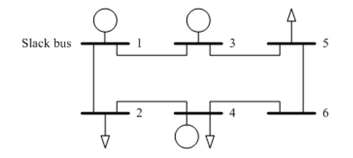
- 1 : Load bus = 2, generator bus = 2
- 2 : Load bus = 2, generator bus = 3
- 3 : Load bus = 3, generator bus = 2
- 4 : Load bus = 3, generator bus = 3
- คำตอบที่ถูกต้อง : 3
- ข้อใดต่อไปนี้กล่าวถูกต้อง
- 1 : ขนาดและมุมของแรงดันไฟฟ้า (voltage magnitude and phase angle) ที่ reference bus จะมีค่าคงที่เท่ากับ 1.0 p.u. และ 0 degree ตามลำดับเสมอ
- 2 : bus ที่พบส่วนใหญ่ในระบบไฟฟ้ากำลังคือ generator bus
- 3 : วิธีแก้ปัญหาการไหลของกำลังไฟฟ้า (power flow) โดยวิธี Gauss-Seidel สามารถลู่เข้าหาคำตอบได้ง่ายกว่าและเร็วกว่าการแก้ปัญหาโดยวิธี Newton-Raphson
- 4 : สมการแสดงการไหลของกำลังไฟฟ้า (power flow) ที่เกี่ยวข้องกับ generator bus สามารถเขียนได้เพียงสมการการไหลของกำลังไฟฟ้าจริง (real power) เท่านั้น
- คำตอบที่ถูกต้อง : 4
- ข้อใดคือปริมาณทางไฟฟ้า 4 ปริมาณหลักที่เกี่ยวข้องกับการศึกษาการไหลของกำลังไฟฟ้า (power flow)
- 1 : กำลังไฟฟ้าจริง กำลังไฟฟ้าเสมือน ขนาดของแรงดันไฟฟ้า ขนาดกระแสไฟฟ้า
- 2 : กำลังไฟฟ้าจริง กำลังไฟฟ้าปรากฎ แรงดันไฟฟ้า กระแสไฟฟ้า
- 3 : กำลังไฟฟ้าจริง กำลังไฟฟ้าเสมือน ขนาดแรงดันไฟฟ้า มุมของแรงดันไฟฟ้า
- 4 : กำลังไฟฟ้าจริง กำลังไฟฟ้าเสมือน ขนาดกระแสไฟฟ้า มุมของกระแสไฟฟ้า
- คำตอบที่ถูกต้อง : 3
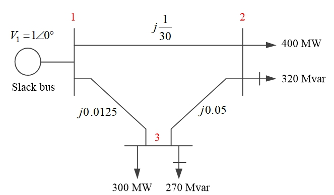
จากรูป bus ใดเป็น generator bus (PV bus)
- 1 : bus 1
- 2 : bus 2
- 3 : bus 3
- 4 : ไม่มีคำตอบที่ถูกต้อง
- คำตอบที่ถูกต้อง : 4
- Jacobian matrix จะมีขนาดเท่าใด ถ้าต้องการคำนวณ load flow จากระบบไฟฟ้ากำลังนี้โดยวิธี Newton-Raphson
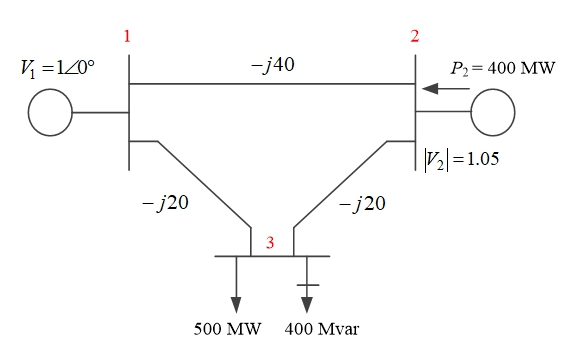
- 1 : 2x2
- 2 : 3x3
- 3 : 5x5
- 4 : 6x6
- คำตอบที่ถูกต้อง : 2
- ข้อใดไม่ใช่คุณสมบัติของ load bus (PQ bus) ในการคำนวน load flow
- 1 : เป็น bus ที่มีโหลด (load) แบบ static ต่ออยู่
- 2 : เป็น bus ที่ทราบค่ากำลังไฟฟ้าจริง (real power)
- 3 : เป็น bus ที่ขนาดของแรงดันไฟฟ้า (voltage magnitude) มีค่าคงที่ตลอดการคำนวน load flow
- 4 : เป็น bus ที่กำลังไฟฟ้าเสมือน (reactive power) มีค่าคงที่ตลอดการคำนวน load flow
- คำตอบที่ถูกต้อง : 3
- ถ้ากำลังไฟฟ้าปรากฎ (apparent power) ที่ bus k ใด ๆ มีค่าเท่ากับ Sk=VkIk* จากรูปกำลังไฟฟ้าปรากฎรวมที่ bus 2 มีค่าเท่าไร
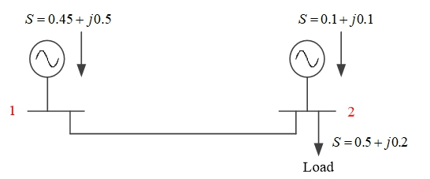
- 1 : 0.6+j0.3
- 2 : -0.4-j0.1
- 3 : 0.6-j0.3
- 4 : -0.4+j0.1
- คำตอบที่ถูกต้อง : 2
- Bus ที่ทราบเฉพาะขนาดและมุมของแรงดันไฟฟ้า (voltage magnitude and phase angle) ในการศึกษา load flow คือ bus ประเภทใด
- 1 : Slack bus
- 2 : Load bus
- 3 : Generator bus
- 4 : VA bus
- คำตอบที่ถูกต้อง : 1
- ระบบกำลังไฟฟ้า 3 bus มี impedance ระหว่าง bus 1-2, 2-3, และ 3-1 คือ j0.4 p.u., j0.2 p.u. และ j0.2 p.u. ตามลำดับ
เครื่องกำเนิดไฟฟ้ามีการต่ออยู่บน bus หมายเลข 1 มีค่าซิงโครนัสรีแอกแตนซ์ (synchronous reactance) เท่ากับ j1 p.u.
และเครื่องกำเนิดไฟฟ้ามีการต่ออยู่บน bus หมายเลข 2 มี (synchronous reactance) เท่ากับ j0.8 p.u.
จงหาค่า admittance ตรงตำแหน่งของ load bus (PQ bus)
- 1 : j5 p.u.
- 2 : j8.5 p.u.
- 3 : j8.75 p.u.
- 4 : j10 p.u.
- คำตอบที่ถูกต้อง : 4
- Bus ชนิดใดจะถูกนำออกไปจากการคำนวณการไหลของกำลังไฟฟ้า (power flow)
- 1 : Slack bus
- 2 : Load bus
- 3 : Voltage controlled bus
- 4 : PQ bus
- คำตอบที่ถูกต้อง : 1
- ตัวแปรใดจะถูกกำหนดที่ load bus
- 1 : ขนาดแรงดันไฟฟ้า (voltage magnitude), กำลังไฟฟ้าจริง (real power)
- 2 : กำลังไฟฟ้าจริง (real power), ขนาดกระแสไฟฟ้า (current magnitude)
- 3 : มุมของแรงดันไฟฟ้า (voltage phase angle), ขนาดแรงดันไฟฟ้า (voltage magnitude)
- 4 : กำลังไฟฟ้าจริง (real power), กำลังไฟฟ้าเสมือน (reactive power)
- คำตอบที่ถูกต้อง : 4
- ในการคำนวณ load flow ค่าขนาดแรงดันไฟฟ้าและค่ากำลังไฟฟ้าจริง (real power) จะถูกกำหนดที่ bus ประเภทใด
- 1 : Load bus
- 2 : Slack bus
- 3 : Generator bus
- 4 : ไม่มีคำตอบที่ถูกต้อง
- คำตอบที่ถูกต้อง : 3
- การศึกษาปัญหาการไหลของกำลังไฟฟ้า (power flow) ข้อใดต่อไปนี้ถูกต้อง
- 1 : กำลังไฟฟ้าเสมือน (reactive power) ไหลจาก bus ที่มีแรงดันไฟฟ้าสูงไปยัง bus ที่มีแรงดันไฟฟ้าต่ำ
- 2 : กำลังไฟฟ้าจริง (real power) ไหลจาก bus ที่มีมุมของแรงดันไฟฟ้า (voltage phase angle) นำหน้าไปยัง bus ที่มีมุมของแรงดันไฟฟ้า (voltage phase angle) ตามหลัง
- 3 : มุมและขนาดของแรงดันไฟฟ้า (voltage phase angle and magnitude) ของแต่ละ bus จะส่งผลต่อทิศทางการไหลของกำลังไฟฟ้าจริง (real power) และกำลังไฟฟ้าเสมือน (reactive power)
- 4 : ถูกทุกข้อ
- คำตอบที่ถูกต้อง : 4
- จงคำนวณหากำลังไฟฟ้าสูญเสียในระบบ (network losses) จากผลเฉลยการไหลของกำลังไฟฟ้า (power flow solution) ซึ่งแสดงดังรูปข้างล่างนี้
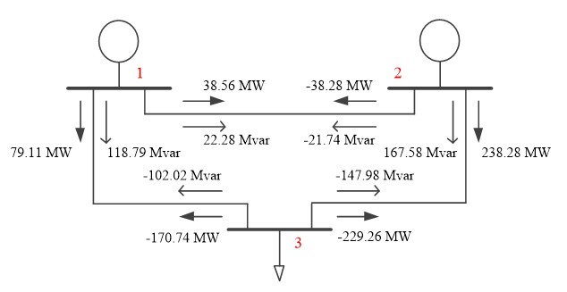
- 1 : 36.91 +j 17.67 MVA
- 2 : 36.91 j 17.67 MVA
- 3 : 17.67 j 36.91 MVA
- 4 : 7.67 +j 36.91 MVA
- คำตอบที่ถูกต้อง : 4
- ระบบ
ไฟฟ้ากำลังระบบหนึ่งมีโครงสร้างดังรูป ถ้าทำการวิเคราะห์ load flow
ระบบนี้โดยใช้วิธี Gauss-Seidel สมการ load flow
ซึ่งใช้สำหรับวิเคราะห์หาแรงดัน bus จะมีทั้งหมดกี่สมการ
- 1 : 1 สมการ
- 2 : 2 สมการ
- 3 : 3 สมการ
- 4 : 4 สมการ
- คำตอบที่ถูกต้อง : 4
- ผล
การวิเคราะห์ load flow ของระบบไฟฟ้ากำลังระบบหนึ่งมีผลลัพธ์ดังแสดงในรูป
จงหาค่าการสูญเสียในสายส่ง (line loss) ระหว่าง bus ที่ 1 และ 2
- 1 : 0.4671 + j0.0071
- 2 : 0.45 + j0.0356
- 3 : 0.9171 + j0.0427
- 4 : 0.0171 - j0.0285
- คำตอบที่ถูกต้อง : 4
- ข้อใดกล่าวได้ถูกต้องเกี่ยวกับประเภทของ bus ทางระบบไฟฟ้ากำลัง
- 1 : Swing bus หรือ slack bus คือ bus ที่ต้องการหาค่ามุมของแรงดันไฟฟ้า (voltage phase angle)
- 2 : Voltage-controlled bus คือ bus ที่กำหนดค่าเฉพาะขนาดของแรงดันไฟฟ้า (voltage magnitude)
- 3 : Load bus คือ bus ที่ต้องการหาค่ากำลังไฟฟ้าจริง (real power) และกำลังไฟฟ้าเสมือน (reactive power)
- 4 : ไม่มีข้อใดถูก
- คำตอบที่ถูกต้อง : 4
- ข้อใดต่อไปนี้ไม่สามารถหาคำตอบได้จากการวิเคราะห์การไหลของกำลังไฟฟ้า (power flow)
- 1 : ปริมาณกำลังสูญเสียในระบบ
- 2 : การเกิดปัญหาเสถียรภาพชั่วขณะของมุมโรเตอร์
- 3 : การเกิดปัญหาแรงดันไฟฟ้าตกหรือแรงดันไฟฟ้าเกิน
- 4 : การเกิดปัญหาการส่งกำลังไฟฟ้าเกินขีดจำกัดทางความร้อนของสายส่ง
- คำตอบที่ถูกต้อง : 2
- การวิเคราะห์การไหลของกำลังไฟฟ้า (power flow) ในระบบไฟฟ้ากำลัง จะแบ่งชนิดของ bus ออกเป็น 3 ชนิด อะไรบ้าง
- 1 : Slack bus, Reference bus และ Voltage-controlled bus
- 2 : Slack bus, Generator bus และ Voltage-controlled bus
- 3 : Generator bus, Voltage-controlled bus และ Load bus
- 4 : Slack bus, Voltage-controlled bus และ Load bus
- คำตอบที่ถูกต้อง : 4
- ในการคำนวณ load flow ของระบบไฟฟ้ากำลัง bus ที่ไม่มีการควบคุมขนาดของแรงดันไฟฟ้า (voltage magnitude) คือ bus ใด
- 1 : Slack bus
- 2 : Swing bus
- 3 : Generator bus
- 4 : Load bus
- คำตอบที่ถูกต้อง : 4
- การคำนวณ load flow ของระบบไฟฟ้ากำลัง ที่ load bus จะต้องคำนวณหาค่าใด
- 1 : กำลังไฟฟ้าจริง (real power) และ กำลังไฟฟ้าเสมือน (reactive power)
- 2 : กำลังไฟฟ้าเสมือน (reactive power) และ มุมของแรงดันไฟฟ้า (voltage phase angle)
- 3 : กำลังไฟฟ้าเสมือน (reactive power) และ ขนาดของแรงดันไฟฟ้า (voltage magnitude)
- 4 : ขนาดของแรงดันไฟฟ้า (voltage magnitude) และ มุมของแรงดันไฟฟ้า (voltage phase angle)
- คำตอบที่ถูกต้อง : 4
- ข้อใดถูกต้องสำหรับการวิเคราะห์ load flow
- 1 : วิธี Gauss-Seidel พัฒนามาจากวิธี Newton-Raphson
- 2 : Power flow equation เป็นสมการที่กล่าวถึงการเกิน limit ต่าง ๆ สายส่ง
- 3 : Swing bus เป็น bus ที่มีแรงดันไฟฟ้าเท่ากับ 1 p.u. เสมอ
- 4 : Load bus เป็น bus ที่ไม่มีเครื่องกำเนิดไฟฟ้า
- คำตอบที่ถูกต้อง : 4
- ข้อใดไม่ถูกต้องสำหรับการวิเคราะห์ load flow
- 1 : Load bus เรียกอีกอย่างหนึ่งว่า voltage-controlled bus
- 2 : Swing bus เรียกอีกอย่างหนึ่งว่า slack bus
- 3 : การวิเคราะห์ load flow ทำให้ได้กำลังสูญเสีย (loss) ในสายส่งด้วย
- 4 : การวิเคราะห์ load flow โดยวิธี Newton-Raphson ต้องทำการหา Jacobian matrix
- คำตอบที่ถูกต้อง : 1
- หากเปรียบเทียบการคำนวณ load flow ด้วยวิธี Newton-Raphson กับวิธี Fast decoupled ข้อใดถูกต้อง
- 1 : วิธี Newton-Raphson ได้ผลลัพธ์รวดเร็วและแม่นยำกว่า
- 2 : วิธี Fast decoupled ได้ผลลัพธ์รวดเร็วและแม่นยำกว่า
- 3 : วิธี Newton-Raphson ได้ผลลัพธ์รวดเร็วกว่า แต่มีความแม่นยำน้อยกว่า
- 4 : วิธี Fast decoupled ได้ผลลัพธ์รวดเร็วกว่า แต่มีความแม่นยำน้อยกว่า
- คำตอบที่ถูกต้อง : 4
- ในการคำนวณ load flow bus ที่มีการกำหนดมุมของแรงดันไฟฟ้า (voltage phase angle) มาให้คือ bus ใด
- 1 : Load bus
- 2 : Voltage-controlled bus
- 3 : Slack bus
- 4 : Jacobian bus
- คำตอบที่ถูกต้อง : 3
- ระบบ ไฟฟ้ากำลังระบบหนึ่งมีจำนวน bus ทั้งหมด 10 bus โดยเลือกจะเลือก 1 bus ให้เป็น slack bus สำหรับbus ที่เหลือจะกำหนดให้เป็น voltage-controlled bus จำนวน 3 bus และที่เหลืออีก 6 bus กำหนดให้เป็นload bus หากวิเคราะห์ load flow ด้วยวิธี Newton-Raphson จำนวนแถวของ Jacobian matrix จะเป็นเท่าใด
- 1 : 9 แถว
- 2 : 20 แถว
- 3 : 18 แถว
- 4 : 15 แถว
- คำตอบที่ถูกต้อง : 4
- ข้อแตกต่างระหว่าง swing bus กับ generator bus คือข้อใด
- 1 : Swing bus ไม่มีเครื่องกำเนิดไฟฟ้า แต่ generator bus มีเครื่องกำเนิดไฟฟ้า
- 2 : Swing bus ไม่มีทั้งเครื่องกำเนิดไฟฟ้าและไม่มีโหลด แต่ generator bus มีทั้งคู่
- 3 : Swing bus ทราบค่าขนาดและมุมของแรงดันไฟฟ้า (voltage magnitude and phase angle) แต่ generator bus ทราบค่าขนาดแรงดันไฟฟ้า (voltage magnitude) และกำลังไฟฟ้าจริง (real power)
- 4 : Swing bus ทราบค่าขนาดแรงดันไฟฟ้า (voltage magnitude) และกำลังไฟฟ้าจริง (real power) แต่ generator bus ทราบค่าขนาดและมุมของแรงดันไฟฟ้า (voltage magnitude and phase angle)
- คำตอบที่ถูกต้อง : 3
- จงแก้สมการต่อไปนี้ด้วยวิธีของ Gauss-Seidel เมื่อจบรอบการคำนวณที่สาม เมื่อ x 2y -1 = 0, x +4y 4 = 0 โดยใช้ค่าเริ่มต้น x=0, y=0
- 1 : x = 1.75 , y = 0.5625
- 2 : x = 1.23 , y = 0.6235
- 3 : x = 2.12 , y = 0.7325
- 4 : x = 2.03 , y = 1.0215
- คำตอบที่ถูกต้อง : 1
- แรงดันไฟฟ้าที่ขั้ว (terminal voltage) ของเครื่องกำเนิดไฟฟ้าซิงโครนัสสามารถเพิ่มให้สูงขึ้นได้โดยวิธีใด
- 1 : เพิ่มความเร็วโรเตอร์ให้มากขึ้น
- 2 : ลดความเร็วโรเตอร์ให้น้อยลง
- 3 : ลดกระแสกระตุ้นสนามแม่เหล็ก (field exciting current) ให้น้อยลง
- 4 : เพื่มกระแสกระตุ้นสนามแม่เหล็ก (field exciting current) ให้มากขึ้น
- คำตอบที่ถูกต้อง : 4
- อุปกรณ์หรือส่วนประกอบไฟฟ้าใดที่ทำให้เกิดกำลังไฟฟ้าเสมือน (reactive power) ในระบบไฟฟ้าได้
- 1 : สายส่งระยะสั้น
- 2 : มอเตอร์เหนี่ยวนำ
- 3 : หม้อแปลงไฟฟ้า
- 4 : ตัวเก็บประจุ
- คำตอบที่ถูกต้อง : 4
- หม้อแปลงไฟฟ้าสองชุด A และ B เหมือนกันทุกประการ นำมาต่อขนานกันเพื่อช่วยกันจ่ายโหลดขนาด P=1000 kW, Q=800 kvar ถ้าปรับมุมแรงดันไฟฟ้าของหม้อแปลงไฟฟ้า A ทางด้านทุติยภูมิให้มีมุมแรงดันไฟฟ้านำหน้าหม้อแปลงไฟฟ้า B 2 องศา กำลังไฟฟ้าที่ไหลผ่านหม้อแปลงไฟฟ้า A และ B ข้อใดที่ใกล้เคียงความเป็นจริงมากที่สุด
- 1 : PA=500 kW, PB=500 kW, QA=400 kvar, QB=400 kvar
- 2 : PA=500 kW, PB=500 kW, QA=500 kvar, QB=300 kvar
- 3 : PA=500 kW, PB=500 kW, QA=300 kvar, QB=500 kvar
- 4 : PA=600 kW, PB=400 kW, QA=400 kvar, QB=400 kvar
- คำตอบที่ถูกต้อง : 4
- ระบบไฟฟ้ากำลังระบบหนึ่งมี 2 bus คือ bus 1 และ bus 2 เชื่อมต่อด้วยสายส่งที่มี impedance= 0 + j1 ohm ขนาดแรงดันไฟฟ้าที่ bus 1 เท่ากับ 500 kV และมีมุม 0 องศา และขนาดแรงดันไฟฟ้าที่ bus 2 เท่ากับ 502 kV และมีมุม 10 องศา กำลังไฟฟ้าจริง (real power) ที่ไหลในสายส่งมีทิศทางอย่างไร
- 1 : ไหลจาก bus 1 ไป bus 2
- 2 : ไหลจาก bus 2 ไป bus 1
- 3 : ไหลเข้าทั้ง bus 1 และ bus 2
- 4 : ไม่มีการไหล
- คำตอบที่ถูกต้อง : 2
- ระบบไฟฟ้ากำลังระบบหนึ่งมี 2 bus คือ bus 1 และ bus 2 เชื่อมต่อด้วยสายส่งที่มี impedance= 0 + j1 ohm ขนาดแรงดันไฟฟ้าที่ bus 1 เท่ากับ 500 kV และมีมุม 0 องศา และขนาดแรงดันไฟฟ้าที่ bus 2 เท่ากับ 502 kV และมีมุม 10 องศา กำลังไฟฟ้าเสมือน (reactive power) ที่ไหลในสายส่งมีทิศทางอย่างไร
- 1 : ไหลจาก bus 1 ไป bus 2
- 2 : ไหลจาก bus 2 ไป bus 1
- 3 : ไหลเข้าทั้ง bus 1 และ bus 2
- 4 : ไม่มีการไหล
- คำตอบที่ถูกต้อง : 2
- Generator ตัวหนึ่งต่ออยู่กับ infinite bus ถ้าต้องการให้ generator ตัวนี้จ่ายกำลังไฟฟ้าจริง (real power) ให้กับ infinite bus จะต้องทำอย่างไร
- 1 : ปรับมุมแรงดันไฟฟ้าของ generator ให้นำหน้ามุมแรงดันไฟฟ้าของ infinite bus
- 2 : ปรับมุมแรงดันไฟฟ้าของ generator ให้ล้าหลังมุมแรงดันไฟฟ้าของ infinite bus
- 3 : ปรับขนาดแรงดันไฟฟ้าของ generator ให้มากกว่าขนาดแรงดันไฟฟ้าของ infinite bus
- 4 : ปรับขนาดแรงดันไฟฟ้าของ generator ให้น้อยกว่าขนาดแรงดันไฟฟ้าของ infinite bus
- คำตอบที่ถูกต้อง : 1
- Generator ตัวหนึ่งต่ออยู่กับ infinite bus ถ้าต้องการให้ generator ตัวนี้จ่ายกำลังไฟฟ้าเสมือน (reactive power) ให้กับ infinite bus จะต้องทำอย่างไร
- 1 : ปรับมุมแรงดันไฟฟ้าของ generator ให้นำหน้ามุมแรงดันไฟฟ้าของ infinite bus
- 2 : ปรับมุมแรงดันไฟฟ้าของ generator ให้ล้าหลังมุมแรงดันไฟฟ้าของ infinite bus
- 3 : ปรับขนาดแรงดันไฟฟ้าของ generator ให้มากกว่าขนาดแรงดันไฟฟ้าของ infinite bus
- 4 : ปรับขนาดแรงดันไฟฟ้าของ generator ให้น้อยกว่าขนาดแรงดันไฟฟ้าของ infinite bus
- คำตอบที่ถูกต้อง : 3
- อุปกรณ์หรือส่วนประกอบไฟฟ้าใดที่ไม่ทำให้เกิดกำลังไฟฟ้าเสมือน (reactive power) ในระบบไฟฟ้าได้
- 1 : เครื่องกำเนิดไฟฟ้าซิงโครนัส
- 2 : หม้อแปลงไฟฟ้า
- 3 : สายส่งเหนือดินระยะไกล
- 4 : ตัวเก็บประจุ
- คำตอบที่ถูกต้อง : 2
- การควบคุมกำลังไฟฟ้าเสมือน (reactive power) ของเครื่องกำเนิดไฟฟ้าในข้อใดทำให้เกิดประสิทธิผลสูงสุด
- 1 : ปรับค่ากระแสกระตุ้นสนามแม่เหล็ก (field exciting current) ของเครื่องกำเนิดไฟฟ้า
- 2 : ปรับค่ามุมกำลังไฟฟ้า (power angle) ของเครื่องกำเนิดไฟฟ้า
- 3 : ปรับค่ากำลังทางกลที่จ่ายให้แก่เครื่องกำเนิดไฟฟ้า
- 4 : ปรับความเร็วรอบของเครื่องกำเนิดไฟฟ้า
- คำตอบที่ถูกต้อง : 1
- การควบคุมกำลังไฟฟ้าจริง (real power) ของเครื่องกำเนิดไฟฟ้าในข้อใดทำให้เกิดประสิทธิผลสูงสุด
- 1 : ปรับค่ากระแสกระตุ้นสนามแม่เหล็ก (field exciting current) ของเครื่องกำเนิดไฟฟ้า
- 2 : ปรับความเร็วรอบของเครื่องกำเนิดไฟฟ้า
- 3 : ปรับกำลังทางกลที่จ่ายให้แก่เครื่องกำเนิดไฟฟ้า
- 4 : ปรับค่า power factor ของเครื่องกำเนิดไฟฟ้า
- คำตอบที่ถูกต้อง : 3
- กำลังไฟฟ้าชนิดใดมีผลในการควบคุมความถี่ของระบบไฟฟ้ากำลัง
- 1 : กำลังไฟฟ้าเสมือน (reactive power)
- 2 : กำลังไฟฟ้าปรากฎ (apparent power)
- 3 : กำลังไฟฟ้าจริง (real power)
- 4 : ไม่มีคำตอบที่ถูกต้อง
- คำตอบที่ถูกต้อง : 3
- การลดลงของความถี่ระบบไฟฟ้ากำลังอาจเกิดจากสาเหตุในข้อใด
- 1 : ปริมาณความต้องการกำลังไฟฟ้าจริง (real power) ลดลง
- 2 : ปริมาณความต้องการของกำลังไฟฟ้าจริง (real power) เพิ่มขึ้น
- 3 : ปริมาณความต้องการของกำลังไฟฟ้าเสมือน (reactive power) ลดลง
- 4 : ปริมาณความต้องการของกำลังไฟฟ้าเสมือน (reactive power) เพิ่มขึ้น
- คำตอบที่ถูกต้อง : 2
- วิธีใดต่อไปนี้เป็นการเพิ่มการส่งของกำลังไฟฟ้าจริง (real power) ในสายส่ง
- 1 : ต่อ reactor อนุกรมกับสายส่ง
- 2 : ต่อ capacitor อนุกรมกับสายส่ง
- 3 : ต่อ reactor ขนานกับสายส่ง
- 4 : ต่อ capacitor ขนานกับสายส่ง
- คำตอบที่ถูกต้อง : 2
- กำลังไฟฟ้าเสมือน (reactive power) มีผลต่อการควบคุมตัวแปรใดในระบบไฟฟ้ากำลัง
- 1 : ความเร็วรอบเครื่องกำเนิดไฟฟ้า
- 2 : มุมโรเตอร์
- 3 : แรงดันไฟฟ้า
- 4 : ความถี่
- คำตอบที่ถูกต้อง : 3
- อุปกรณ์ควบคุมชนิดใดต่อไปนี้ไม่จัดอยู่ในประเภทเดียวกับอุปกรณ์ควบคุมอื่น
- 1 : Tap-changing transformer
- 2 : Phase-shifting transformer
- 3 : Capacitor bank
- 4 : Synchronous condenser
- คำตอบที่ถูกต้อง : 2
- การ ควบคุมกำลังไฟฟ้าจริง (real power) ด้วยหม้อแปลงไฟฟ้า โดยแรงดันไฟฟ้าด้านออกจะมีมุมเฟสต่างจากแรงดันไฟฟ้าด้านเข้าของหม้อแปลง ไฟฟ้านี้ แต่ขนาดของแรงดันไฟฟ้าไม่เปลี่ยนแปลง หม้อแปลงไฟฟ้านี้เป็นหม้อแปลงไฟฟ้าประเภทใด
- 1 : Autotransformer
- 2 : Phase transformer
- 3 : Phase-shifting transformer
- 4 : Phase angle transformer
- คำตอบที่ถูกต้อง : 3
- ข้อใดไม่จัดเป็นวิธีควบคุมการไหลของกำลังไฟฟ้า (power flow) โดยตรง
- 1 : การปรับ tap ของหม้อแปลงไฟฟ้า
- 2 : การติดตั้งชุดตัวเก็บประจุแบบปรับค่าได้
- 3 : การติดตั้ง synchronous motor
- 4 : การเปลี่ยนการจัดเรียง bus ในสถานีไฟฟ้า
- คำตอบที่ถูกต้อง : 4
- Phase-shifting transformer ทำหน้าที่อะไรในระบบไฟฟ้ากำลัง
- 1 : เพิ่มระดับแรงดันไฟฟ้า
- 2 : ลดระดับแรงดันไฟฟ้า
- 3 : ควบคุมการไหลของกำลังไฟฟ้าจริง (real power)
- 4 : ควบคุมการไหลของกำลังไฟฟ้าเสมือน (reactive power)
- คำตอบที่ถูกต้อง : 3
- ข้อใดไม่ถูกต้อง
- 1 : Regulated transformer ใช้สำหรับควบคุมการไหลของกำลังไฟฟ้าเสมือน (reactive power)
- 2 : Phase-shifting transformer ใช้สำหรับควบคุมการไหลของกำลังไฟฟ้าจริง (real power)
- 3 : กำลังไฟฟ้าเสมือน (reactive power) จะมีค่าต่างกันมาก ใน phase-shifting transformer ที่มี phase angle ต่างกันมาก
- 4 : กำลังไฟฟ้าจริง (real power) จะไหลมากในหม้อแปลงไฟฟ้าที่มี phase angle นำหน้า
- คำตอบที่ถูกต้อง : 3
- ข้อใดไม่ถูกต้อง
- 1 : เครื่องกำเนิดไฟฟ้าสามารถจ่ายและรับกำลังไฟฟ้าเสมือน (reactive power) ได้
- 2 : หม้อแปลงไฟฟ้ารับกำลังไฟฟ้าเสมือน (reactive power) เสมอ
- 3 : สายส่งสามารถจ่ายกำลังไฟฟ้าเสมือน (reactive power) ได้
- 4 : ภาระไฟฟ้า (load) ไม่สามารถจ่ายกำลังไฟฟ้าเสมือน (reactive power) ได้
- คำตอบที่ถูกต้อง : 4
- ถ้าต้องการเพิ่มระดับแรงดันไฟฟ้าที่ bus ให้สูงขึ้นสามารถทำได้โดยวิธีใด
- 1 : จ่ายกำลังไฟฟ้าเสมือน (reactive power) โดยใช้เครื่องกำเนิดไฟฟ้า
- 2 : ต่อตัวเก็บประจุที่ bus
- 3 : เพิ่มแรงดันไฟฟ้าโดยใช้หม้อแปลงไฟฟ้า
- 4 : ถูกทุกข้อ
- คำตอบที่ถูกต้อง : 4
- การกลับทิศการไหลของกำลังไฟฟ้าจริง (real power) ในสายส่งสามารถทำได้โดยวิธีใด
- 1 : ลดค่า reactance ของสายส่ง
- 2 : ลดขนาดแรงดันไฟฟ้า (voltage magnitude) ที่ต้นและปลายสายส่ง
- 3 : กลับมุมของแรงดันไฟฟ้า (voltage phase angle) ที่ต้นและปลายสายส่ง
- 4 : ไม่มีคำตอบที่ถูกต้อง
- คำตอบที่ถูกต้อง : 3
จากรูปของแบบจำลองระบบไฟฟ้ากำลังนี้ bus ใดบ้างที่เป็น load bus (PQ bus)
- 1 : bus 2, 4, และ 5
- 2 : bus 2, 5, และ 6
- 3 : bus 4, 5, และ 6
- 4 : bus 4 และ 6
- คำตอบที่ถูกต้อง : 2
จากรูปของแบบจำลองระบบไฟฟ้ากำลังนี้ bus ใดบ้างที่เป็น generator bus (PV bus)
- 1 : bus 1, 3, และ 4
- 2 : bus 2, 5, และ 6
- 3 : bus 1 และ 3
- 4 : bus 3 และ 4
- คำตอบที่ถูกต้อง : 4
- ระบบไฟฟ้ากำลังหนึ่งมีค่า impedance ของอุปกรณ์ไฟฟ้าดังรูป ให้คำนวณค่า Y13 ของ admittance matrix ของระบบไฟฟ้านี้
- 1 : j2
- 2 : j2
- 3 : j0.5
- 4 : j0.5
- คำตอบที่ถูกต้อง : 4
- ระบบไฟฟ้ากำลังหนึ่งมีข้อมูลของหม้อแปลงไฟฟ้าและสายส่งดังรูป (ค่าต่าง ๆ เป็นค่า per unit) ให้คำนวณค่า Y13 ของ admittance matrix ของระบบไฟฟ้านี้
- 1 : 0
- 2 : 0.004+ j0.0533
- 3 : 1.400-j18.657
- 4 : -1.400+j18.657
- คำตอบที่ถูกต้อง : 1
- ระบบไฟฟ้ากำลังหนึ่งมีข้อมูลของหม้อแปลงไฟฟ้าและสายส่งดังรูป (ค่าต่าง ๆ เป็นค่า per unit) ให้คำนวณค่า Y11 ของ admittance matrix ของระบบไฟฟ้านี้
- 1 : 0
- 2 : 0.004+ j0.0533
- 3 : 1.400-j18.657
- 4 : -1.400+j18.657
- คำตอบที่ถูกต้อง : 3
- ระบบไฟฟ้ากำลังหนึ่งมีข้อมูลของหม้อแปลงไฟฟ้าและสายส่งดังรูป (ค่าต่าง ๆ เป็นค่า per unit) ให้คำนวณค่า Y12 ของ admittance matrix ของระบบไฟฟ้านี้
- 1 : 0
- 2 : 0.004+ j0.0533
- 3 : 1.400-j18.657
- 4 : -1.400+j18.657
- คำตอบที่ถูกต้อง : 4
- ระบบไฟฟ้ากำลังหนึ่งมีข้อมูลของหม้อแปลงไฟฟ้าและสายส่งดังรูป (ค่าต่าง ๆ เป็นค่า per unit) ให้คำนวณค่า Y33 ของ admittance matrix ของระบบไฟฟ้านี้
- 1 : 0
- 2 : 0.02+ j0.25
- 3 : 0.318-j3.975
- 4 : 0.636-j7.73
- คำตอบที่ถูกต้อง : 4
- ระบบไฟฟ้ากำลังหนึ่งมีข้อมูลของหม้อแปลงไฟฟ้าและสายส่งดังรูป (ค่าต่าง ๆ เป็นค่า per unit) ให้คำนวณค่า Y44 ของ admittance matrix ของระบบไฟฟ้านี้
- 1 : 0
- 2 : 0.02+ j0.25
- 3 : 0.318-j3.975
- 4 : 1.692-j22.877
- คำตอบที่ถูกต้อง : 4
- ระบบไฟฟ้ากำลังหนึ่งมีค่า impedance ของอุปกรณ์ไฟฟ้าดังรูป ให้คำนวณค่า Y11 และ Y12 ของ admittance matrix ของระบบไฟฟ้านี้
- 1 : j2 และ -j2
- 2 : -j2 และ j2
- 3 : j0.5 และ j0.5
- 4 : -j0.5 และ j0.5
- คำตอบที่ถูกต้อง : 2
- ระบบไฟฟ้ากำลังหนึ่งดังรูป ให้คำนวณค่า S2 ของระบบไฟฟ้านี้
- 1 : 0.5
- 2 : -0.5
- 3 : 0.5+j2.0
- 4 : -0.5+j2.0
- คำตอบที่ถูกต้อง : 2
- ระบบ
ไฟฟ้ากำลังหนึ่งดังรูป ถ้าต้องการคำนวณ load flow โดยวิธี Gauss iteration
จะต้องตั้งสมการในการคำนวณ iteration กี่สมการ
และตัวแปรที่ต้องทำการหาค่าที่ bus 2 คือข้อใด
- 1 : 1 สมการ ตัวแปรที่ต้องการหาคือแรงดันไฟฟ้าและมุมทางไฟฟ้า
- 2 : 1 สมการ ตัวแปรที่ต้องการหาคือกำลังไฟฟ้าเสมือนและมุมทางไฟฟ้า
- 3 : 2 สมการ ตัวแปรที่ต้องการหาคือแรงดันไฟฟ้าและมุมทางไฟฟ้า
- 4 : 2 สมการ ตัวแปรที่ต้องการหาคือกำลังไฟฟ้าเสมือนและมุมทางไฟฟ้า
- คำตอบที่ถูกต้อง : 1
- ระบบ
ไฟฟ้ากำลังหนึ่งดังรูป ถ้าต้องการคำนวณ load flow โดยวิธี Gauss iteration
จะต้องตั้งสมการในการคำนวณ iteration กี่สมการ
และตัวแปรที่ต้องทำการหาค่าที่ bus 2 คือข้อใด
- 1 : 1 สมการ ตัวแปรที่ต้องการหาคือแรงดันไฟฟ้าและมุมทางไฟฟ้า
- 2 : 1 สมการ ตัวแปรที่ต้องการหาคือกำลังไฟฟ้าเสมือนและมุมทางไฟฟ้า
- 3 : 2 สมการ ตัวแปรที่ต้องการหาคือแรงดันไฟฟ้าและมุมทางไฟฟ้า
- 4 : 2 สมการ ตัวแปรที่ต้องการหาคือกำลังไฟฟ้าเสมือนและมุมทางไฟฟ้า
- คำตอบที่ถูกต้อง : 4
- Swing bus เรียกอีกอย่างหนึ่งว่า bus ใด
- 1 : Load bus
- 2 : Voltage-controlled bus
- 3 : Slack bus
- 4 : Jacobian bus
- คำตอบที่ถูกต้อง : 3
- หม้อ แปลงขนาด 2000 kVA พิกัดแรงดัน 24 kV/416 V มีค่า impedance เป็น 6% เมื่อเกิดการลัดวงจรทางด้านแรงต่ำ จงหากระแสลัดวงจรสามเฟสสูงสุดทางด้านแรงสูง
- 1 : 48 kA
- 2 : 2.77 kA
- 3 : 46 kA
- 4 : 0.80 kA
- คำตอบที่ถูกต้อง : 4
- หม้อ แปลงขนาด 2000 kVA พิกัดแรงดัน 24 kV/416 V มีค่า impedance เป็น 6% เมื่อเกิดการลัดวงจรทางด้านแรงต่ำ จงหากระแสลัดวงจรสามเฟสสูงสุดทางด้านแรงต่ำ
- 1 : 46 kA
- 2 : 0.80 kA
- 3 : 0.05 kA
- 4 : 48 kA
- คำตอบที่ถูกต้อง : 1
- การไฟฟ้าต้นทางได้กำหนดกระแสลัดวงจรณ.จุดที่จะสร้างสถานีไฟฟ้าย่อยระบบ 115 kV เป็น 100MVA จงหาว่าค่าอิมพีแดนซ์ต้นทางทั้งหมดมีค่ากี่โอห์ม
- 1 : 229
- 2 : 502
- 3 : 870
- 4 : 132
- คำตอบที่ถูกต้อง : 4
- ข้อใดแสดงสูตรการคำนวนกระแสลัดวงจรสามเฟส (three-phase fault) ในรูปวงจรลำดับ (sequence network) ได้ถูกต้อง
- 1 :
- 2 :
- 3 :
- 4 :
- คำตอบที่ถูกต้อง : 1
- ข้อ
ใดคือกระแสลัดวงจรเมื่อเกิดความผิดพร่องแบบสามเฟส (three-phase fault)
ที่บัส 2 เมื่อกำหนดให้แรงดันก่อนเกิดความผิดพร่องเป็น 1 p.u. และมุม 0
องศา และ
- 1 : j2.5
- 2 : j4
- 3 : j5
- 4 : j10
- คำตอบที่ถูกต้อง : 2
- ข้อใดต่อไปนี้กล่าวถูกต้อง
- 1 : ในขณะที่เกิด fault แรงดันไฟฟ้า ณ จุดที่เกิด fault จะมีค่าเป็นศูนย์
- 2 : พิกัดกระแสของอุปกรณ์ตัดตอนแปรผกผันกับความเร็วในการทำงาน
- 3 : ค่า thevenin equivalent system impedance สามารถหาได้จากค่า short-circuit capability
- 4 : โดยทั่วไปพบว่าค่า sub-transient reactance มีค่ามากกว่าค่า transient reactance
- คำตอบที่ถูกต้อง : 3
- ข้อใดคือสมมติฐานที่ไม่ถูกต้องในการวิเคราะห์ความผิดพร่อง (fault analysis)
- 1 : ความต้านทาน (resistance) และความจุไฟฟ้า (capacitance) สามารถตัดออกจากการพิจารณาได้
- 2 : หม้อแปลงไฟฟ้าทุกตัวมีระดับแรงดันตามจุดแยกที่ระบุไว้ (nominal tap)
- 3 : กระแสโหลด (load current) ไม่มีผลต่อการคำนวณกระแสผิดพร่อง (fault current)
- 4 : แบบจำลองของเครื่องกำเนิดไฟฟ้าประกอบด้วยแรงเคลื่อนไฟฟ้าคงที่ (constant voltage source) ต่ออนุกรมกับรีแอคแตนซ์ค่าหนึ่ง
- คำตอบที่ถูกต้อง : 3
- รูปข้างล่างนี้แสดงวงจรลำดับ (sequence network) ของการเกิดความผิดพร่องแบบใด
- 1 : Balanced three-phase fault
- 2 : Double line-to-ground fault
- 3 : single line-to-ground fault
- 4 : Line-to-line fault
- คำตอบที่ถูกต้อง : 4
- กำหนดให้ Zbus มีค่าตามที่กำหนดให้ หากเกิดการลัดวงจรสามเฟสที่บัส 1 โดยที่แรงดันก่อนลัดวงจรเท่ากับ 1+j0 p.u. กระแสลัดวงจรมีค่าเท่ากับเท่าใด
- 1 : -j7.7 p.u.
- 2 : -j12.5 p.u.
- 3 : -j20.0 p.u.
- 4 : -j14.3 p.u.
- คำตอบที่ถูกต้อง : 2
- ข้อใดไม่เกี่ยวข้องกับขนาดขององค์ประกอบกระแสตรง (DC component) ของกระแสลัดวงจรแบบสามเฟสที่เกิดขึ้นที่เครื่องกำเนิดไฟฟ้าซิงโครนัส
- 1 : ขนาดพิกัดแรงดันของเครื่องกำเนิดไฟฟ้า
- 2 : ค่าอิมพีแดนซ์ลำดับศูนย์ของเครื่องกำเนิดไฟฟ้า
- 3 : มุมแรงดันไฟฟ้าขณะที่เกิดการลัดวงจร
- 4 : ค่า transient reactance ในแนวแกน direct ของเครื่องกำเนิดไฟฟ้า
- คำตอบที่ถูกต้อง : 2
- จากรูป แรงดันไฟฟ้าที่บัส 3 ขณะจ่ายภาระไฟฟ้าปกติมีค่าเท่ากับ 0.95+j0 p.u. แรงดันไฟฟ้าที่เครื่องกำเนิดไฟฟ้าเท่ากับ 1.055+j0.182 p.u. และแรงดันไฟฟ้าที่มอเตอร์เท่ากับ 0.88-j0.121 p.u. หากเกิดการลัดวงจรสามเฟสที่บัส 3 ค่ากระแสลัดวงจรมีค่าเท่าใด
- 1 : j6.95 p.u.
- 2 : -j7.92 p.u.
- 3 : -j8.12 p.u.
- 4 : -j8.85 p.u.
- คำตอบที่ถูกต้อง : 2
- เครื่อง กำเนิดไฟฟ้าซิงโครนัสมีพิกัด 500 MVA, 13.8 kV, 50 Hz ค่า sub-transient reactance เท่ากับ 0.2 p.u. ในขณะที่เครื่องกำเนิดไฟฟ้ากำลังทำงานในภาวะไร้ภาระ ได้เกิดการลัดวงจรแบบสามเฟส (three-phase short circuit) ขึ้นที่ขั้วของเครื่องกำเนิดไฟฟ้า จงคำนวณหาค่า rms ของกระแสลัดวงจรที่เกิดขึ้น
- 1 : 104.6 kA
- 2 : 181.2 kA
- 3 : 313.8 kA
- 4 : 20.9 kA
- คำตอบที่ถูกต้อง : 1
- เครื่อง กำเนิดไฟฟ้าซิงโครนัสมีพิกัด 500 MVA, 20 kV, 50 Hz ค่า sub-transient reactance เท่ากับ 0.15 p.u. ในขณะที่เครื่องกำเนิดไฟฟ้ากำลังจ่ายภาระที่พิกัดกำลังและแรงดัน ที่ค่า 0.9 PF lagging ได้เกิดการลัดวงจรแบบสามเฟส (three-phase short circuit) ขึ้นที่ขั้วของเครื่องกำเนิดไฟฟ้า จงคำนวณหาค่า rms ของกระแสลัดวงจร
- 1 : 90.8 kA
- 2 : 96.2 kA
- 3 : 103.3 kA
- 4 : 179.0 kA
- คำตอบที่ถูกต้อง : 3
- เครื่องกำเนิดไฟฟ้าซิงโครนัสสามเฟสพิกัด 500 kVA 2.4 kV มีค่า sub-transient reactance เท่ากับ 0.2 pu. ต่อกับมอเตอร์ไฟฟ้าซิงโครนัสสามเฟสสองตัวขนานกันดังแสดงในรูปข้างล่าง นี้เมื่อใช้พิกัดของเครื่องกำเนิดไฟฟ้าเป็นค่าฐาน มอเตอร์แต่ละตัวมีค่า sub-transient reactance เท่ากับ 0.8 pu. จงคำนวณหาค่า rms ของกระแสลัดวงจรที่เกิดขึ้น
- 1 : 200 A
- 2 : 347 A
- 3 : 902 A
- 4 : 1562 A
- คำตอบที่ถูกต้อง : 3
- ข้อความต่อไปนี้ข้อใด ไม่ถูกต้อง
- 1 : Reactance ของเครื่องกำเนิดไฟฟ้าซิงโครนัสในสถานะ sub-transient มีค่ามากที่สุด
- 2 : การลัดวงจรโดยตรงมีความรุนแรงกว่าการลัดวงจรผ่าน impedance
- 3 : การลัดวงจรแบบ 3 เฟส ลงดิน เป็นการลัดวงจรแบบสมมาตร
- 4 : กระแสลัดวงจรในสถานะ sub-transient มีค่ามากกว่าสถานะ transient
- คำตอบที่ถูกต้อง : 1
การลัดวงจร ณ จุดใดมีความรุนแรงที่สุด
- 1 : P1
- 2 : P2
- 3 : P3
- 4 : P4
- คำตอบที่ถูกต้อง : 1
- การผิดพร่อง (fault) ในลักษณะใด ถือเป็นแบบ symmetrical fault
- 1 : Three-phase fault
- 2 : Single line-to-ground fault
- 3 : Double line-to-ground fault
- 4 : Line-to-line fault
- คำตอบที่ถูกต้อง : 1
- กำหนดให้องค์ประกอบบางตัวใน bus impedance matrix ของระบบที่พิจารณามีค่าดังนี้ Z11=j0.28 p.u., Z22=j0.25 p.u. และ Z12=j0.1 p.u. ก่อนเกิด three phase fault ที่บัส 2 ของระบบ พบว่า บัส 1 มีขนาดแรงดันเท่ากับ 0.99 p.u. บัส 2 มีขนาดแรงดันเท่ากับ 1 p.u. ข้อใดต่อไปนี้กล่าวถูกต้อง
- 1 : บัส 1 มีค่า short circuit capacity สูงกว่าบัส 2
- 2 : กระแสลัดวงจรแบบสามเฟสที่บัส 2 มีค่าเท่ากับ 4 p.u.
- 3 : หลังจากเกิดการลัดวงจรที่บัส 2 แล้วขนาดของแรงดันที่บัส 1 มีขนาดเท่ากับ 0.4 p.u.
- 4 : ไม่มีข้อใดกล่าวถูกต้อง
- คำตอบที่ถูกต้อง : 2
- เฟสเซอร์ของ symmetrical component ที่มีขนาดเท่ากันทั้ง 3 เฟส มีมุมต่างเฟสเท่ากันและมีทิศทางไปทางเดียวกัน คือส่วนประกอบส่วนใด
- 1 : Positive sequence
- 2 : Negative sequence
- 3 : Zero sequence
- 4 : ถูกทุกข้อ
- คำตอบที่ถูกต้อง : 3
- ข้อใดไม่ใช่จุดมุ่งหมายในการวิเคราะห์ symmetrical fault
- 1 : เพื่อตั้งค่า relay
- 2 : เพื่อเลือกเครื่องป้องกันกระแสเกิน
- 3 : เพื่อให้ทราบกำลังสูญเสียของระบบ
- 4 : เพื่อให้ทราบแรงที่ใช้ในการยึดจับอุปกรณ์
- คำตอบที่ถูกต้อง : 3
- จง คำนวณ short circuit capacity และกระแสลัดวงจรสามเฟสสมดุลที่เกิดหลังหม้อแปลงไฟฟ้า 3 เฟส พิกัด 500 kVA, 400 V, impedance=4% โดยหม้อแปลงนี้ต่ออยู่กับ infinite bus
- 1 : 12.5 MVA, 18 kA
- 2 : 15.5 MVA, 20 kA
- 3 : 18.5 MVA, 22 kA
- 4 : 20.5 MVA, 25 kA
- คำตอบที่ถูกต้อง : 1
- เมื่อ เกิดการลัดวงจรขึ้นทันทีที่ขั้วของเครื่องกำเนิดไฟฟ้าซิงโครนัส จะแบ่งช่วงเวลาของเหตุการณ์ออกได้เป็น 3 ช่วง ข้อใดเรียงลำดับช่วงเวลาของเหตุการณ์ตามลำดับก่อนหลังได้ถูกต้อง
- 1 : Steady-state period, sub-transient period, transient period
- 2 : Steady-state period, transient period, sub-transient period
- 3 : Sub-transient period, transient period, steady-state period
- 4 : Transient period, sub-transient period, steady-state period
- คำตอบที่ถูกต้อง : 2
- พิจารณาระบบไฟฟ้ากำลังซึ่งมีแรงดัน line เท่ากับ 10 kV หากกระแสลัดวงจรมีค่า 10 kA จงคำนวณค่า short circuit capacity
- 1 : 57.7 MVA
- 2 : 100 MVA
- 3 : 173.2 MVA
- 4 : 300 MVA
- คำตอบที่ถูกต้อง : 3
- หากเกิดการลัดวงจรแบบสามเฟสที่บัส 1 ผ่าน Zf=j0.155 p.u. จงคำนวณค่ากระแสลัดวงจรที่เกิดขึ้นเมื่อ
- 1 : -j4.2 p.u.
- 2 : -j5.0 p.u.
- 3 : -j5.8 p.u.
- 4 : -j6.45 p.u.
- คำตอบที่ถูกต้อง : 2
- เครื่อง
กำเนิดไฟฟ้าซิงโครนัสพิกัด 500 MVA, 20 kV ทำงานอยู่ในสภาวะไร้ภาระ
มีแรงดันไฟฟ้าที่ขั้ว (terminal voltage) สูงกว่าค่าพิกัดอยู่ 5% ได้เกิด
three-phase fault ขึ้นที่บัส จงหาค่ากระแสลัดวงจรในช่วง sub-transient
เมื่อ
- 1 : 3.3 p.u.
- 2 : 3.5 p.u.
- 3 : 5.0 p.u.
- 4 : 5.25 p.u.
- คำตอบที่ถูกต้อง : 4
- หากเกิดการลัดวงจรแบบสามเฟสขึ้นที่บัส 3 ผ่าน Zf=j0.19 p.u. จงหาค่าแรงดันไฟฟ้าที่บัส 1,2,3 ตามลำดับ
- 1 : 0.925 p.u., 0.925 p.u., 0 p.u.
- 2 : 0.925 p.u., 0.925 p.u., 0.525 p.u.
- 3 : 0.925 pu., 0.925 p.u., 0.925 p.u.
- 4 : 0 p.u., 0 p.u., 0 p.u.
- คำตอบที่ถูกต้อง : 2
- 1 : 150 MVA
- 2 : 200 MVA
- 3 : 250 MVA
- 4 : 300 MVA
- คำตอบที่ถูกต้อง : 2
- การคำนวณหากระแสผิดพร่อง (fault) แบบใด นำไปกำหนดขนาดพิกัดของเซอร์กิตเบรกเกอร์
- 1 : Single line-to-ground fault
- 2 : Double line-to-ground fault
- 3 : Line-to-line fault
- 4 : Three phase fault
- คำตอบที่ถูกต้อง : 4
- ข้อใดเป็นแหล่งกำเนิดกระแสลัดวงจรในระบบไฟฟ้ากำลัง
- 1 : เครื่องกำเนิดไฟฟ้าซิงโครนัส
- 2 : มอเตอร์ซิงโครนัส
- 3 : มอเตอร์เหนี่ยวนำ
- 4 : ถูกทุกข้อ
- คำตอบที่ถูกต้อง : 4
- ระบบ
ไฟฟ้ากำลัง 4 บัสระบบหนึ่งมี bus impedance matrix ใน sequence network
เป็นดังแสดงด้านล่าง หากเกิด three phase fault ที่บัสที่ 3
จงหาขนาดของกระแสลัดวงจรดังกล่าวว่าเป็นกี่ per unit
เมื่อกำหนดให้ขนาดของแรงดันก่อนเกิดการลัดวงจรเป็น 1 p.u. เท่ากันทุกบัส
- 1 : 5.896 p.u.
- 2 : 11.792 p.u.
- 3 : 16.795 p.u.
- 4 : ไม่มีข้อถูก
- คำตอบที่ถูกต้อง : 1
- ระบบ
ไฟฟ้ากำลัง 4 บัสระบบหนึ่งมี bus impedance matrix ใน sequence network
เป็นดังแสดงด้านล่าง หากเกิด three phase fault ที่บัสที่ 3
จงหาขนาดของแรงดันที่บัสที่ 1 ว่าเป็นกี่ per unit
เมื่อกำหนดให้ขนาดของแรงดันก่อนเกิดการลัดวงจรเป็น 1 p.u. เท่ากันทุกบัส
- 1 : 0.325 p.u.
- 2 : 0.465 p.u.
- 3 : 0.535 p.u.
- 4 : 1.0 p.u.
- คำตอบที่ถูกต้อง : 3
- Positive impedance (Z1), negative impedance (Z2), zero impedance (Z0) ของสายส่งเหนือดิน มีค่าแตกต่างกันหรือไม่อย่างไร
- 1 : Z1 > Z2 > Z0
- 2 : Z1 < Z2 < Z0
- 3 : Z1 = Z2 = Z0
- 4 : Z1 = Z2 < Z0
- คำตอบที่ถูกต้อง : 4
- Positive impedance (Z1), negative impedance (Z2), zero impedance (Z0) ของหม้อแปลงแบบ core type มีค่าแตกต่างกันหรือไม่อย่างไร
- 1 : Z1 > Z2 > Z0
- 2 : Z1 < Z2 < Z0
- 3 : Z1 = Z2 = Z0
- 4 : Z1 = Z2 < Z0
- คำตอบที่ถูกต้อง : 4
- Positive impedance (Z1), negative impedance (Z2), zero impedance (Z0) ของเครื่องกำเนิดไฟฟ้าแบบขั้วยื่น (salient pole generator) มีค่าแตกต่างกันหรือไม่อย่างไร
- 1 : Z1 > Z2 > Z0
- 2 : Z1 < Z2 < Z0
- 3 : Z1 = Z2 = Z0
- 4 : Z1 = Z2 > Z0
- คำตอบที่ถูกต้อง : 1
- ถ้า หม้อแปลง 1000 kVA 24 kV/416 V ทางด้านแรงสูงต่อแบบ delta ไม่ต่อลงดิน และทางด้านแรงต่ำต่อแบบ wye ต่อลงดินโดยตรง ถ้ากระแสลัดวงจรลงดินที่เฟส A กระแสไหลในเฟส A, B, C มีค่าเป็นลำดับดังนี้ 20 kA, 20 kA, 10 kA กระแส zero sequence ทางด้านแรงสูงมีค่าเท่าใด
- 1 : 173 A
- 2 : 10 kA
- 3 : 20 kA
- 4 : 0 A
- คำตอบที่ถูกต้อง : 4
- วงจร ลำดับ (sequence network) ของระบบไฟฟ้ากำลังหนึ่ง มีค่า positive negative และ zero sequence impedance เรียงลำดับได้ดังนี้ Z1=0.01 p.u., Z2=0.01 p.u. และ Z0=0.01 p.u. ถ้าเกิดลัดวงจรลงดินที่เฟส A และสมมุตแรงดันมีค่า 1.0 p.u. ให้หากระแสลัดวงจรลงดินที่เฟส A
- 1 : 100 p.u.
- 2 : 33 p.u.
- 3 : 11 p.u.
- 4 : 300 p.u.
- คำตอบที่ถูกต้อง : 1
- ข้อใดถูกต้องเกี่ยวกับ symmetrical component เมื่อกำหนด
- 1 :
- 2 :
- 3 :
- 4 :
- คำตอบที่ถูกต้อง : 2
- 1 :
- 2 :
- 3 :
- 4 :
- คำตอบที่ถูกต้อง : 2
- 1 :
- 2 :
- 3 :
- 4 :
- คำตอบที่ถูกต้อง : 3
- 1 :
- 2 :
- 3 :
- 4 :
- คำตอบที่ถูกต้อง : 4
- เมื่อเกิดการลัดวงจรจากเฟส b แบบ single-line-to-ground fault ในระบบส่งจ่ายไฟฟ้า เงื่อนไขในข้อใดไม่ถูกต้อง
- 1 : กระแสไฟฟ้าลัดวงจรที่เฟส a เท่ากับศูนย์
- 2 : กระแสไฟฟ้าลัดวงจรที่เฟส b เท่ากับศูนย์
- 3 : กระแสไฟฟ้าลัดวงจรที่เฟส c เท่ากับศูนย์
- 4 : แรงดันไฟฟ้าระหว่างเฟส b กันดินมีค่าเท่ากับศูนย์
- คำตอบที่ถูกต้อง : 2
- เมื่อ เกิดการลัดวงจรระหว่างเฟส b กับ c แบบ double-line-to-ground fault ผ่าน impedance ในระบบไฟฟ้าโดยไม่คิดผลของกระแสที่ไหลก่อนเกิดการลัดวงจร ข้อใดไม่ถูกต้อง
- 1 : กระแสไฟฟ้าของเฟส a มีค่าเท่ากับศูนย์
- 2 : ขนาดของกระแสไฟฟ้าของเฟส b เท่ากับเฟส c
- 3 : แรงดันไฟฟ้าระหว่างเฟส b กับดินมีค่าเท่ากับแรงดันไฟฟ้าเฟส c กับดิน
- 4 : ไม่มีคำตอบที่ถูกต้อง
- คำตอบที่ถูกต้อง : 4
- ลำดับเฟสของแรงดันไฟฟ้าของส่วนประกอบสมมาตรลำดับบวกและลบ คือข้อใด ถ้าระบบไฟฟ้าประกอบด้วยเฟส a, b และ c
- 1 : abc และ abc
- 2 : abc และ acb
- 3 : acb และ acb
- 4 : ไม่มีข้อใดถูก
- คำตอบที่ถูกต้อง : 2
- กำหนด ให้แรงดันไฟฟ้าต่อเฟส (phase voltage) ของเฟส a, b และ c มีขนาดเท่ากับ 220 V ซึ่งมีมุมเฟสต่างกัน 120 องศา จงหาขนาดของแรงดันไฟฟ้าของส่วนประกอบสมมาตร (symmetrical component) ของ positive, negative และ zero sequence
- 1 : V1 = 220 V มุม 0 องศา, V2 = 0 V, V0 = 0 V
- 2 : V1 = 0 V, V2 = 220 V มุม -120 องศา, V0 = 0 V
- 3 : V1 = 0 V, V2 = 0 V, V0 = 220 V มุม 0 องศา
- 4 : V1 = 220 V มุม 0 องศา, V2 = 220 V มุม -120 องศา, V0 = 0 V
- คำตอบที่ถูกต้อง : 1
- ถ้า ระบบไฟฟ้าเกิดการลัดวงจรของเฟส a แบบ single-line-to-ground fault จงหาค่ากระแสลัดวงจรที่เกิดขึ้นเมื่อกำหนดให้แรงดันไฟฟ้าก่อนการเกิดลัดวงจร ในระบบไฟฟ้าเท่ากับ 1.05 p.u. มุม 0 องศา และค่า positive, negative และ zero impedance มีค่าเป็น j0.25, j0.1และ j0.2 p.u. ตามลำดับ
- 1 : -j5.7273 p.u.
- 2 : j5.7273 p.u.
- 3 : -j1.9091 p.u.
- 4 : j1.9091 p.u.
- คำตอบที่ถูกต้อง : 1
- ถ้า
positive sequence current ของเฟส a มีค่าเป็น 0.94 A positive sequence
current ของเฟส c จะมีค่าเท่าไร
เมื่อระบบไฟฟ้าสามเฟสประกอบด้วยกระแสสามเฟสดังนี้
- 1 : 0.53 A
- 2 : 1.6 A
- 3 : 0 A
- 4 : 0.94 A
- คำตอบที่ถูกต้อง : 4
- ถ้าเกิดการลัดวงจรแบบ line-to-line fault ระหว่างเฟส b กับเฟส c ของระบบ และค่าของ fault impedance = j0.05 p.u. ให้คำนวณ per unit zero sequence current ที่ไหลในเฟส a ถ้ากำหนดให้ pre fault voltage = 1 p.u. และไม่คิดผลของ pre fault current
- 1 : 0 p.u.
- 2 : -j2.22 p.u.
- 3 : j2.22 p.u.
- 4 : ข้อมูลไม่เพียงพอ
- คำตอบที่ถูกต้อง : 1
- จงหาแรงดัน zero-sequence ของเฟส A จากเวกเตอร์ของแรงดันไฟฟ้าในเฟส ABC ที่กำหนดให้ดังนี้
- 1 : 0 p.u.
- 2 : 1.155 p.u.
- 3 : 2 p.u.
- 4 : 3.464 p.u.
- คำตอบที่ถูกต้อง : 1
- กรณีเกิด double-line-to-ground fault ระหว่าง เฟส B และ เฟส C ลงดิน ข้อใดกล่าวไม่ถูกต้อง
- 1 :
- 2 :
- 3 :
- 4 :

- คำตอบที่ถูกต้อง : 2
- กรณีเกิด single-line-to-ground fault ที่เฟส A ข้อใดกล่าวไม่ถูกต้อง
- 1 :
- 2 :
- 3 :
- 4 :
- คำตอบที่ถูกต้อง : 3
- จากข้อมูลแรงดันเฟสหลังจากที่เกิดความผิดพร่อง (post-fault phase voltages) จงระบุว่า fault ที่เกิดขึ้นน่าจะเป็นแบบใด
- 1 : Double line-to-ground fault
- 2 : Single line-to-ground fault
- 3 : Line-to-line fault
- 4 : Balanced three-phase fault
- คำตอบที่ถูกต้อง : 2
- จงคำนวณหาขนาดของกระแสในเฟส a จากแผนภาพการเชื่อมต่อ sequence networks ข้างล่างนี้
- 1 : 2 p.u.
- 2 : 4 p.u.
- 3 : 6 p.u.
- 4 : 8 p.u.
- คำตอบที่ถูกต้อง : 3
- จงหาค่า zero sequence current ของเฟส a จากรูป ถ้ากำหนดให้
- 1 :
- 2 :
- 3 :
- 4 : 0 p.u.
- คำตอบที่ถูกต้อง : 4
- การวิ เคราะห์ single-line-to-ground fault ในระบบ sequence network ต้องใช้ network ลำดับเฟสใดบ้าง และ network หล่านั้นต้องนำมาต่อกันอย่างไร
- 1 : ใช้เฉพาะ zero-sequence network เท่านั้น
- 2 : ใช้ positive sequence network มาต่อขนานกับ negative sequence network
- 3 : ใช้ positive negative และ zero sequence networks มาต่ออนุกรมกัน
- 4 : ใช้ positive negative และ zero sequence networks มาต่อขนานกัน
- คำตอบที่ถูกต้อง : 3
- จงคำนวณหาแรงดันไฟฟ้าในเฟส b และ c จากข้อมูลต่อไปนี้
- 1 :
- 2 :
- 3 :
- 4 :
- คำตอบที่ถูกต้อง : 3
- จงคำนวณค่า zero sequence current จาก phase current ต่อไปนี้
- 1 : 0 p.u.
- 2 :
- 3 :
- 4 :
- คำตอบที่ถูกต้อง : 2
- จาก
ภาพแสดงการเกิดการลัดวงจรระหว่างเฟส b กับ c
ซึ่งรับกำลังไฟฟ้ามาจากเครื่องกำเนิดไฟฟ้าที่ไม่ได้ต่อภาระอยู่
ข้อใดแสดงสมการของกระแสและแรงดันได้ถูกต้อง
- 1 : Vb = Vc, Ia = 0, Ib = Ic
- 2 : Vb = Vc, Ia = 0, Ib = -Ic
- 3 : Va = Vb = Vc, Ia = 0, Ib = Ic
- 4 : Va= Vb = Vc, Ia = 0, Ib = -Ic
- คำตอบที่ถูกต้อง : 2
- ข้อใดถูกต้อง
- 1 : ขนาดแรงดันแต่ละเฟสของ zero sequence ไม่จำเป็นต้องเท่ากัน
- 2 : กระแสลัดวงจรไม่สมมาตรสามารถเขียนในรูป symmetrical component ได้เสมอ
- 3 : ถูกทั้ง 2 ข้อ
- 4 : ผิดทั้ง 2 ข้อ
- คำตอบที่ถูกต้อง : 2
- ข้อใดถูกต้อง
- 1 : หม้อแปลง delta-wye แบบ neutral ต่อลงดินมีวงจร positive sequence เหมือนกับวงจร negative sequence
- 2 : Bolted fault คือ การลัดวงจรที่ผ่าน impedance ที่มีค่าเป็นศูนย์
- 3 : ถูกทั้ง 2 ข้อ
- 4 : ผิดทั้ง 2 ข้อ
- คำตอบที่ถูกต้อง : 2
- ข้อใดถูกต้อง
- 1 : การวิเคราะห์ line-to-line fault ต้องคำนวณหา zero sequence
- 2 : ขนาดกระแส positive sequence เท่ากับขนาดกระแส negative sequence สำหรับ double line-to-ground fault
- 3 : ถูกทั้ง 2 ข้อ
- 4 : ผิดทั้ง 2 ข้อ
- คำตอบที่ถูกต้อง : 4
- จาก function operator a ในการวิเคราะห์ symmetrical component จงคำนวณหาค่า a2 -1
- 1 : -1.5 - j0.866
- 2 : 1.5 + j0.866
- 3 : 1.5 - j0.866
- 4 : -1.5 + j0.866
- คำตอบที่ถูกต้อง : 1
- ในการเกิด line-to-line fault ค่าของกระแส zero sequence จะมีค่าเป็นเท่าไร
- 1 : เท่ากับค่ากระแส positive sequence
- 2 : เท่ากับค่ากระแส negative sequence
- 3 : Infinity
- 4 : 0
- คำตอบที่ถูกต้อง : 4
- ในการจำลองการเกิด double line-to-ground fault จะต้องให้ sequence network ต่อกันอย่างไร
- 1 : Sequence network ทั้งสามชุดต่อกันแบบอนุกรม
- 2 : Sequence network ทั้งสามชุดต่อกันแบบขนาน
- 3 : Positive sequence network และ negative sequence network ต่อกันแบบอนุกรม
- 4 : Positive sequence network และ negative sequence network ต่อกันแบบขนาน
- คำตอบที่ถูกต้อง : 2
- จงหา negative sequence ของกระแสที่ไหลในสาย a เมื่อพิจารณากระแสเฟส (phase current) ในระบบไฟฟ้าสามเฟสเป็นดังนี้
- 1 :
- 2 :
- 3 :
- 4 :
- คำตอบที่ถูกต้อง : 2
- ถ้า เครื่องกำเนิดไฟฟ้าขณะไม่มีภาระเกิด single line-to-ground fault การเชื่อมต่อ sequence networks ของ positive, negative และ zero sequences จะเป็นอย่างไร
- 1 : ต่อขนานและอนุกรมกัน
- 2 : ต่ออนุกรมและขนานกัน
- 3 : ต่อขนานกันหมด
- 4 : ต่ออนุกรมกันหมด
- คำตอบที่ถูกต้อง : 4
- จากรูป จงหา zero sequence ของกระแสเฟส a
- 1 :
- 2 :
- 3 : 0 A
- 4 : ไม่สามารถหาคำตอบได้
- คำตอบที่ถูกต้อง : 3
- กำหนดให้ line to line voltage เป็นไปตามที่กำหนดในภาพ ข้อใดเขียนแรงดันในรูป symmetrical component ได้ถูกต้อง
- 1 :
- 2 :
- 3 :
- 4 :
- คำตอบที่ถูกต้อง : 4
- กำหนดให้ line to line voltage เป็นไปตามที่กำหนดในภาพ จงหา positive sequence ของ Ia
- 1 :
- 2 :
- 3 :
- 4 : ไม่มีข้อถูก
- คำตอบที่ถูกต้อง : 1
- ระบบไฟฟ้าสามเฟสเกิดกระแสลัดวงจรขนาด 1000 A จงหาค่า per unit ของกระแสลัดวงจร เมื่อกำหนดค่าฐานเป็น 100 MVA, 230 kV
- 1 : 1 p.u.
- 2 : 2 p.u.
- 3 : 3 p.u.
- 4 : 4 p.u.
- คำตอบที่ถูกต้อง : 4
- ระบบไฟฟ้าสามเฟสเกิดกระแสลัดวงจรขนาด 2 p.u. จงหาค่ากระแสลัดวงจรจริง (actual) เมื่อกำหนดค่าฐานเป็น 100 MVA, 230 kV
- 1 : 250 A
- 2 : 500 A
- 3 : 750 A
- 4 : 1000 A
- คำตอบที่ถูกต้อง : 2
- ที่ จุดจ่ายไฟของระบบสามเฟสมี short circuit capacity (SCC) = 100 MVA, ขนาดแรงดัน 230 kV ถ้าเกิดการลัดวงจรที่จุดจ่ายไฟแบบสามเฟสลงดินผ่าน impedance= j300 ohm จงหา per unit ของกระแสลัดวงจร
- 1 : -j0.638 p.u.
- 2 : -j0.668 p.u.
- 3 : -j0.768 p.u.
- 4 : -j1.0 p.u.
- คำตอบที่ถูกต้อง : 1
- ที่ จุดจ่ายไฟของระบบสามเฟสมี short circuit capacity (SCC) = 100 MVA, ขนาดแรงดัน 230 kV ถ้าเกิดการลัดวงจรที่จุดจ่ายไฟแบบสามเฟสลงดินผ่าน impedance= j300 ohm จงหากระแสลัดวงจร
- 1 : -j160 A
- 2 : -j320 A
- 3 : -j500 A
- 4 : -j600 A
- คำตอบที่ถูกต้อง : 1
- ในระบบสามเฟสที่มีเครื่องกำเนิดไฟฟ้าขนาด 1000 kVA, 18 kV, X=10% หากเครื่องกำเนิดไฟฟ้านี้เกิดการลัดวงจรแบบสามเฟสลงดินแบบ bolted ขณะเดินเครื่องแบบไร้ภาระ จงหากระแสลัดวงจร
- 1 : -j320 A
- 2 : -j800 A
- 3 : -j1000 A
- 4 : -j1600 A
- คำตอบที่ถูกต้อง : 1
- ในระบบสามเฟสที่มีเครื่องกำเนิดไฟฟ้าขนาด 1000 kVA, 18 kV, X=10% หากเครื่องกำเนิดไฟฟ้านี้เกิดการลัดวงจรแบบสามเฟสลงดินแบบ bolted ขณะเดินเครื่องแบบไร้ภาระ จงหา per unit ของกระแสลัดวงจร
- 1 : -j2 p.u.
- 2 : -j5 p.u.
- 3 : -j8 p.u.
- 4 : -j10 p.u.
- คำตอบที่ถูกต้อง : 4
- ในระบบสามเฟสที่มีเครื่องกำเนิดไฟฟ้าขนาด 1000 kVA, 18 kV, X=10% หากเครื่องกำเนิดไฟฟ้านี้เกิดการลัดวงจรแบบสามเฟสผ่าน impedance= j32.4 ohm จงหากระแสลัดวงจร
- 1 : -j160 A
- 2 : -j320 A
- 3 : -j800 A
- 4 : -j1000 A
- คำตอบที่ถูกต้อง : 1
- แรงดันเป็นแบบ positive sequence ข้อใดถูกต้อง
- 1 : มุมเฟสของแรงดันเฟส a, เฟส b และเฟส c คือ 0 องศา, 120 องศา และ 240 องศา ตามลำดับ
- 2 : มุมเฟสของแรงดันเฟส a, เฟส b และเฟส c คือ 0 องศา, 240 องศา และ 120 องศา ตามลำดับ
- 3 : มุมเฟสของแรงดันเฟส a, เฟส b และเฟส c คือ 0 องศา, -120 องศา และ 240 องศา ตามลำดับ
- 4 : ไม่มีข้อใดถูกต้อง
- คำตอบที่ถูกต้อง : 2
- แรงดันเป็นแบบ negative sequence ข้อใดถูกต้อง
- 1 : มุมเฟสของแรงดันเฟส a, เฟส b และเฟส c คือ 0 องศา, 120 องศา และ 240 องศา ตามลำดับ
- 2 : มุมเฟสของแรงดันเฟส a, เฟส b และเฟส c คือ 0 องศา, 240 องศา และ 120 องศา ตามลำดับ
- 3 : มุมเฟสของแรงดันเฟส a, เฟส b และเฟส c คือ 0 องศา, -120 องศา และ 240 องศา ตามลำดับ
- 4 : ไม่มีข้อใดถูกต้อง
- คำตอบที่ถูกต้อง : 1
ถ้า |a| = |1| มีมุมเฟส 120 องศา และเป็นระบบ positive sequence ข้อใดถูกต้อง
- 1 : Vb = aVa , Vc = a2Va
- 2 : Vb = a2Va , Vc = aVa
- 3 : Vb = -a2Va , Vc = -aVa
- 4 : ไม่มีข้อใดถูกต้อง
- คำตอบที่ถูกต้อง : 2
- ถ้า |a| = |1| มีมุมเฟส 120 องศา และเป็นระบบ negative sequence ข้อใดถูกต้อง
- 1 : Vb = aVa , Vc = a2Va
- 2 : Vb = a2Va , Vc = aVa
- 3 : Vb = -a2Va , Vc = -aVa
- 4 : ไม่มีข้อใดถูกต้อง
- คำตอบที่ถูกต้อง : 1
- ในระบบ symmetrical component ข้อใดถูกต้อง
- 1 : ใน zero sequence มุมเฟสของแรงดันเฟส a, เฟส b และเฟส c เท่ากันหมด
- 2 : ใน positive sequnce มุมเฟสของแรงดันเฟส a, เฟส b และเฟส c เท่ากันหมด
- 3 : ใน negative sequence มุมเฟสของแรงดันเฟส a, เฟส b และเฟส c เท่ากันหมด
- 4 : ใน zero sequence มุมเฟสของแรงดันในแต่ละเฟส จะห่างกัน 120 องศา
- คำตอบที่ถูกต้อง : 1
เครื่องกำเนิดไฟฟ้า G1 และ G2 ต่อขนานกันเพื่อร่วมจ่ายภาระผ่านหม้อแปลง delta/wye ดังรูป G1และ G2 มีค่า sub-transient reactance เท่ากับ 0.375 p.u. และ 0.75 p.u. ตามลำดับ หม้อแปลงไฟฟ้ามีพิกัด 75 MVA, 13.8/69 kV มีค่า reactance เท่ากับ 10 % หากกำหนดให้หม้อแปลงไฟฟ้าเป็นฐานของระบบ จุด P ก่อนลัดวงจรมีแรงดันเท่ากับ 66 kV กระแสลัดวงจร sub-transient ที่จุด P มีค่ากี่ per unit
- 1 : j1.741 p.u.
- 2 : j2.322 p.u.
- 3 : j2.733 p.u.
- 4 : j3.214 p.u.
- คำตอบที่ถูกต้อง : 3
เครื่องกำเนิดไฟฟ้า G1 และ G2 ต่อขนานกันเพื่อร่วมจ่ายภาระผ่านหม้อแปลง delta/wye ดังรูป G1และ G2 มีค่า sub-transient reactance เท่ากับ 0.375 p.u. และ 0.75 p.u. ตามลำดับ หม้อแปลงไฟฟ้ามีพิกัด 75 MVA, 13.8/69 kV มีค่า reactance เท่ากับ 10 % หากกำหนดให้หม้อแปลงไฟฟ้าเป็นฐานของระบบ จุด P ก่อนลัดวงจรมีแรงดันเท่ากับ 66 kV กระแสลัดวงจร sub-transient ที่จุด P มีค่ากี่ kA
- 1 : 2.691 kA
- 2 : 1.716 kA
- 3 : 1.935 kA
- 4 : 2.327 kA
- คำตอบที่ถูกต้อง : 2
เครื่องกำเนิดไฟฟ้า G1 และ G2 ต่อขนานกันเพื่อร่วมจ่ายภาระผ่านหม้อแปลง delta/wye ดังรูป G1และ G2 มีค่า sub-transient reactance เท่ากับ 0.375 p.u. และ 0.75 p.u. ตามลำดับ หม้อแปลงไฟฟ้ามีพิกัด 75 MVA, 13.8/69 kV มีค่า reactance เท่ากับ 10 % หากกำหนดให้หม้อแปลงไฟฟ้าเป็นฐานของระบบ หากทราบว่ากระแสลัดวงจรช่วง sub-transient ที่จุด P มีค่าเท่ากับ j2.735 p.u. จงหากระแสลัดวงจรจาก G1 ว่าเป็นกี่ per unit
- 1 : j1.823 p.u.
- 2 : j0.912 p.u.
- 3 : j1.234 p.u.
- 4 : j1.501 p.u.
- คำตอบที่ถูกต้อง : 1
- เครื่อง
กำเนิดไฟฟ้า G1 และ G2 ต่อขนานกันเพื่อร่วมจ่ายภาระผ่านหม้อแปลง delta/wye
ดังรูป G1และ G2 มีค่า sub-transient reactance เท่ากับ 0.375 p.u. และ
0.75 p.u. ตามลำดับ หม้อแปลงไฟฟ้ามีพิกัด 75 MVA, 13.8/69 kV มีค่า
reactance เท่ากับ 10 % หากกำหนดให้หม้อแปลงไฟฟ้าเป็นฐานของระบบ
หากทราบว่ากระแสลัดวงจรช่วง sub-transient ที่จุด P มีค่าเท่ากับ j2.735 p.u. จงหากระแสลัดวงจรจาก G2 ว่าเป็นกี่ per unit
- 1 : j1.823 p.u.
- 2 : j0.912 p.u.
- 3 : j1.234 p.u.
- 4 : j1.501 p.u.
- คำตอบที่ถูกต้อง : 2
- เครื่องกำเนิดไฟฟ้ามีพิกัด 20 MVA, 13.8 kV และมี Xd=0.25
p.u. มีค่า reactance ของ negative sequence และ zero sequence เท่ากับ
0.35 และ 0.1 p.u. ตามลำดับ มีการต่อลงดินโดยตรง (solidly grounded)
จงหากระแสลัดวงจร Ia1 ที่ขั้วเครื่องกำเนิดไฟฟ้าเมื่อเกิดลัดวงจรแบบ double line-to-ground ระหว่างเฟส b และเฟส c
- 1 : j1.667 p.u.
- 2 : j3.05 p.u.
- 3 : j4.12 p.u.
- 4 : j1.43 p.u.
- คำตอบที่ถูกต้อง : 2
- เครื่องกำเนิดไฟฟ้ามีพิกัด 20 MVA, 13.8 kV และมี Xd=0.25 p.u. มีค่า reactance ของ negative sequence และ zero sequence เท่ากับ 0.35 และ 0.1 p.u. ตามลำดับ มีการต่อลงดินโดยตรง (solidly grounded) จงหากระแสลัดวงจร Ia2 ที่ขั้วเครื่องกำเนิดไฟฟ้าเมื่อเกิดลัดวงจรแบบ double line-to-ground ระหว่างเฟส b และเฟส c
- 1 : j0.68 p.u.
- 2 : -j0.87 p.u.
- 3 : j1.05 p.u.
- 4 : j1.22 p.u.
- คำตอบที่ถูกต้อง : 1
- เครื่องกำเนิดไฟฟ้ามีพิกัด 20 MVA, 13.8 kV และมี Xd=0.25 p.u. มีค่า reactance ของ negative sequence และ zero sequence เท่ากับ 0.35 และ 0.1 p.u. ตามลำดับ มีการต่อลงดินโดยตรง (solidly grounded) จงหากระแสลัดวงจร Ia0 ที่ขั้วเครื่องกำเนิดไฟฟ้าเมื่อเกิดลัดวงจรแบบ double line-to-ground ระหว่างเฟส b และเฟส c
- 1 : j0.93 p.u.
- 2 : j1.47 p.u.
- 3 : j1.85 p.u.
- 4 : j2.37 p.u.
- คำตอบที่ถูกต้อง : 4
- จงหาค่า positive sequence เฟส b เมื่อกำหนดให้
- 1 :
- 2 :
- 3 :
- 4 :
- คำตอบที่ถูกต้อง : 3
- จงหาค่า positive sequence เฟส c
- 1 :
- 2 :
- 3 :
- 4 :
- คำตอบที่ถูกต้อง : 2
- จงหาค่า negative sequence เฟส b เมื่อกำหนดให้
- 1 :
- 2 :
- 3 :
- 4 :
- คำตอบที่ถูกต้อง : 1